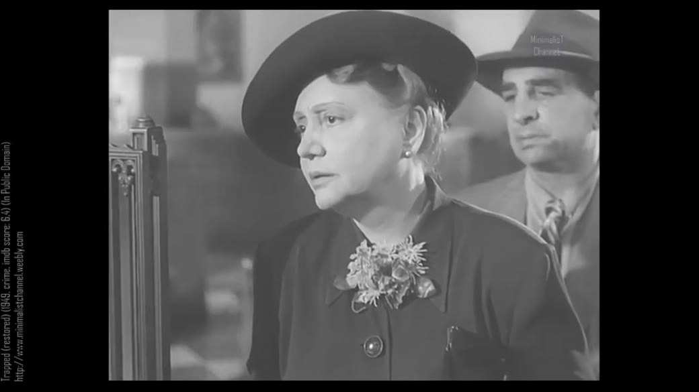
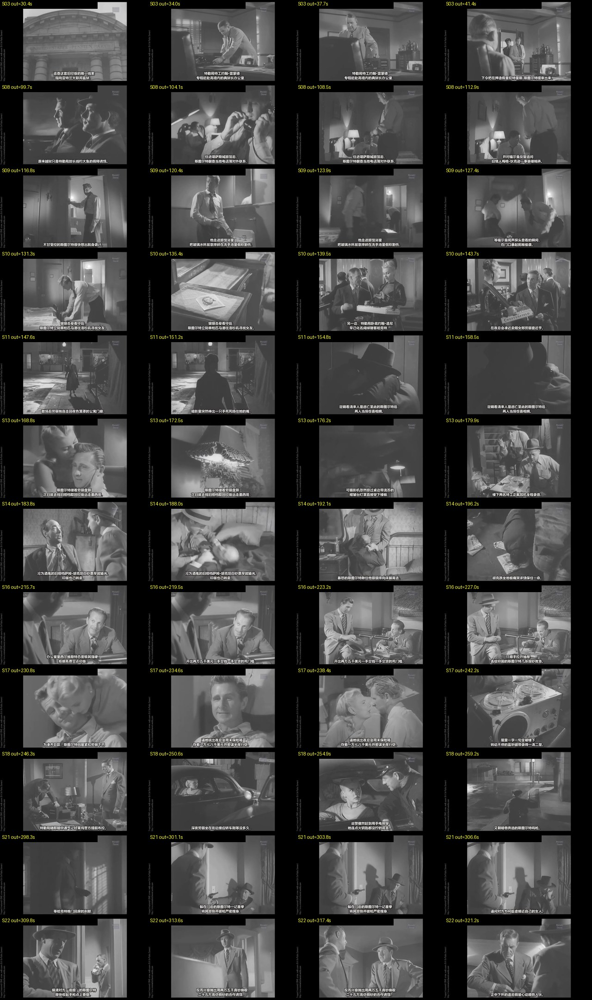
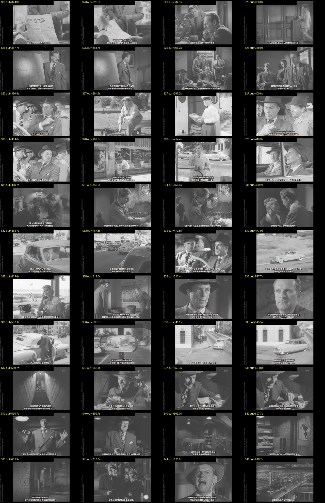
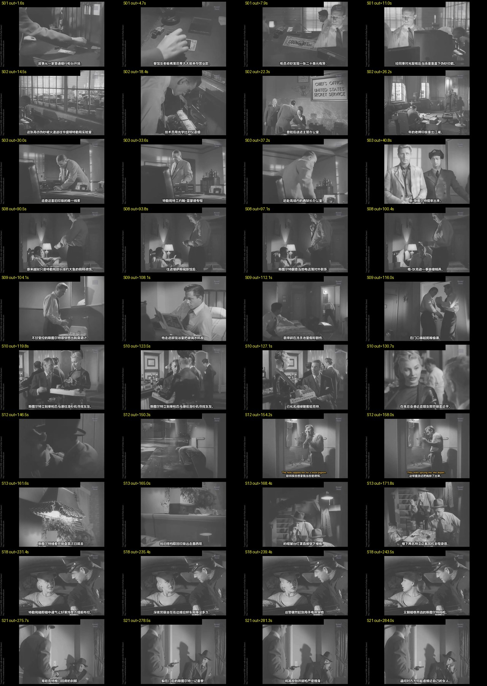
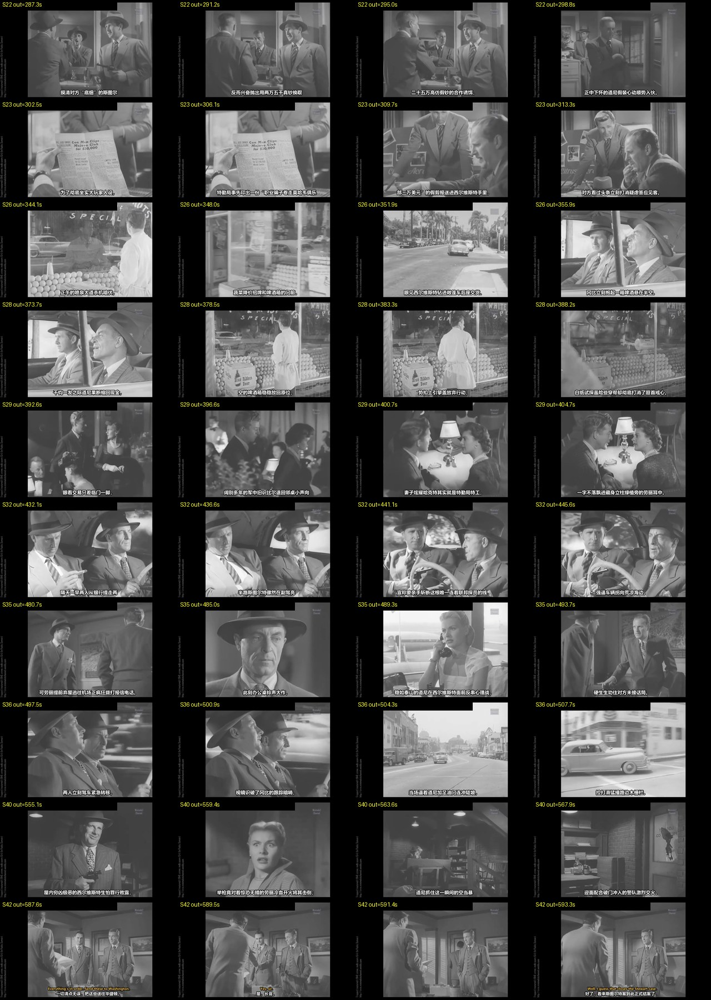

OMNIALE · WEEK 6
长片定稿脚本精准寻镜与成片制作
根据42段定稿脚本，在79分钟电影中找回具体动作、道具和原声，完成中文字幕、中文配音、原声保留与精准音画剪辑。

一、任务定义
主编已经确定全部剧情、旁白与原声窗口，源片时间戳需要由模型自行定位。模型须在完整原片中逐句找镜，保留脚本事实与音画对应关系。
- 原始素材
- Trapped（1949） · 79 分 24 秒
- 脚本
- 42 段 · 36 段中文旁白 · 6 段英文原声
- 交付成片
- 6–12 分钟 · 字幕与镜头映射
完整输入电影（有声）
全片分为四段连续播放，时间均以原片起点计。预览经过压缩。
查看全部 42 段定稿脚本
| 编号 | 声音方式 | 定稿文稿 |
|---|---|---|
| S01 | 中文旁白 | 故事从一家普通银行柜台开场，餐馆女老板弗莱厄蒂太太前来存营业款，柜员点钞发现一张二十美元有异，经同事对光复核后当场重重盖下伪钞印戳。 |
| S02 | 中文旁白 | 这张高仿伪钞被火速送往华盛顿特勤局实验室，技术员用光学比对仪逐细查验后送进主管办公室，官员们当即认出销声匿迹三年的老牌印版重出江湖。 |
| S03 | 中文旁白 | 追查这套旧印版的唯一线索指向亚特兰大联邦监狱，特勤局特工约翰·雷蒙德专程赶赴高墙内的典狱长办公室，下令把在押造假重犯特里斯·斯图尔特提审出来。 |
| S04 | 中文旁白 | 面对桌上摆出的同版假二十美元和还剩七年的牢狱刑期，身穿浅色囚服的斯图尔特捏着钞票端详片刻，随即矢口否认、死活不愿供出印版到底落在谁手。 |
| S05 | 中文旁白 | 几周后的雨夜，在押送前往堪萨斯城的长途大巴上，本该戴着手铐的斯图尔特突然掏枪逼迫副法警开锁停车，趁乱冲下车门钻进路边接应的黑色轿车。 |
| S06 | 中文旁白 | 可这场惊险劫囚转眼就在四十号公路反转，开车的接应人福尔曼神色平静地戳破斯图尔特手里那把左轮其实根本没有装子弹，顺手把空枪缴了回来。 |
| S07 | 英文原声 | This is SS-972. Go ahead. Agent Foreman reporting. We're on Highway 40. I've got the boy. 这里是 SS-972，请讲。 / 福尔曼探员汇报，我们在四十号公路，人已经接到了。 |
| S08 | 中文旁白 | 原来越狱只是特勤局放长线钓大鱼的假释诱饵。住进堪萨斯城旅馆后，斯图尔特翻查当地电话簿对外联系，并对福尔曼反复追问旧情人梅格·狄克逊一事装傻糊弄。 |
| S09 | 中文旁白 | 不甘受控的斯图尔特很快想出脱身诡计，他走进旅馆浴室把玻璃水杯故意摔碎在洗手池里假称割伤，等福尔曼闻声探头查看的瞬间，在门口暴起扼喉偷袭。 |
| S10 | 中文旁白 | 狠狠击晕看守后，斯图尔特立刻单枪匹马潜往洛杉矶寻找女友。另一边，特勤局卧底约翰·道尼早已化名阔绰赌客哈克特，在夜总会凑近卖烟女郎劳丽套近乎。 |
| S11 | 中文旁白 | 散场后劳丽独自走回夜色笼罩的公寓门廊，暗影里突然伸出一只手死死捂住她的嘴，定睛看清来人是逃亡至此的斯图尔特后，两人当场惊喜相拥。 |
| S12 | 英文原声 | The feds tapped me for a stool pigeon. They even sprung me, the dopes, then I sprung one of them. 联邦探员想拿我当告密诱饵， / 这帮蠢货还把我放了出来，结果我反倒撂倒了他们一个。 |
| S13 | 中文旁白 | 斯图尔特搂着劳丽盘算次日就去找旧搭档取回印版远走墨西哥，可摄影机忽然掠过桌边带流苏的褶皱台灯罩直接穿下楼板，楼下两名特工正戴耳机全程录音。 |
| S14 | 中文旁白 | 次日破落旅馆内，沦为酒鬼的旧搭档萨姆·胡克坦白钞票早就输光、印版也已转卖。暴怒的斯图尔特揪住他狠狠摔向床脚离去，胡克跌坐地板痛哭求饶保住一命。 |
| S15 | 中文旁白 | 顺着胡克供出的线索，斯图尔特独自摸到市中心格兰特大厦三楼，抬头望着挂着柑橘地产投资公司招牌的玻璃门，大步推门会见买下印版的幕后主脑杰克·西尔维斯特。 |
| S16 | 中文旁白 | 办公室里西尔维斯特态度极其强硬，拒绝免费交还印版，开出两万五千美元一手交钱一手交货的死门槛，只顺手拉开抽屉丢给穷困的斯图尔特几张现钞救急。 |
| S17 | 中文旁白 | 为凑齐巨款，斯图尔特回屋紧扣劳丽下巴逼她说出夜总会周末保险箱存着一万七八千美元并密谋半夜行窃，屋里一字一句全被楼下转动不停的监听磁带录得一清二楚。 |
| S18 | 中文旁白 | 特勤局随即暗中通气让好莱坞警方提前布控。深夜劳丽坐在街边接应轿车刚等没多久，巡警骤然赶到用手电照穿她连点火钥匙都没拧的谎言，又朝暗巷奔逃的斯图尔特鸣枪。 |
| S19 | 中文旁白 | 被捕带回好莱坞第六分局的劳丽没关多久便重获自由，出面替她垫钱保释的正是卧底哈克特，他痛快从钱包点出三百美元现金结清手续并乘虚顺水留了住址。 |
| S20 | 中文旁白 | 醋意大发的斯图尔特很快摸黑撬进哈克特下榻的玛格丽特旅馆翻箱倒柜，打着手电筒接连搜出特勤局刻意备下的做记号扑克、灌铅骰子以及印着哈克特大头的防老千通缉传单。 |
| S21 | 中文旁白 | 等哈克特推门回房的刹那，躲在门后的斯图尔特一记重拳将其放倒并拔枪严密搜身，逼问对方为何趁虚接近自己的女人。 |
| S22 | 中文旁白 | 摸清对方“底细”的斯图尔特很快收起手枪点上香烟，反而兴奋抛出用两万五千真钞换取二十五万高仿假钞的合作诱饵，正中下怀的道尼假装心动顺势入伙。 |
| S23 | 中文旁白 | 为了彻底坐实大玩家人设，特勤局事先印出一份“职业骗子卷走莫哈韦俱乐部三万美元”的假剪报送进西尔维斯特手里，对方看过头条立刻打消疑虑答应见客。 |
| S24 | 中文旁白 | 走进里屋拉严百叶窗，西尔维斯特拿出一张成品钞试探眼力，哈克特接过放大镜故作行家把假钞赞成真钱逗得大佬开怀大笑，随后两人当场约好次日正午喷泉大道交易。 |
| S25 | 中文旁白 | 当晚特勤局主管冈比在会议室指着大号街区地图部署收网兵力，明确叮嘱全员次日死盯扮成杂货店员的自己，唯独见他把啤酒箱放到人行道上才能一拥而上抓人。 |
| S26 | 中文旁白 | 正午的喷泉大道杀机暗伏，伪装成杂货店员的冈比守在堆满蔬菜降价招牌和啤酒箱的门前。眼见西尔维斯特钻进敞篷车后座交货、道尼掏出真钱，冈比立刻抱起一箱啤酒悬在半空。 |
| S27 | 英文原声 | Hey, what's the idea? What do you mean, Tris? Nothing but scraps of cut paper! I had to be sure. It might be a trap. 喂，搞什么鬼？ / 你什么意思，特里斯？ / 全是裁碎的白纸！ / 我必须确认清楚，万一这是个圈套呢。 |
| S28 | 中文旁白 | 千钧一发之际道尼果断缩回现金，守在门口的冈比当即把抱在半空的啤酒箱稳稳放回原位，旁边佯装修车的便衣探员顺势扣上引擎盖放弃行动，白纸试探虽险些穿帮却彻底打消了匪首戒心。 |
| S29 | 中文旁白 | 眼看交易只差临门一脚，意外却在夜总会当场爆发。阔别多年的军中旧识比尔退回邻桌小声向妻子炫耀哈克特其实就是特勤局特工，一字不落飘进藏身立柱绿植旁的劳丽耳中。 |
| S30 | 英文原声 | I didn't want to talk in there. Tris, Hackett's a cop. His real name's Downey, Secret Service or something. 我不想在屋里说。特里斯，哈克特是条子， / 他真名叫道尼，好像是特勤局的。 |
| S31 | 中文旁白 | 两人立刻悄悄溜回三零四室大声放起唱片打掩护并满屋翻搜，很快斯图尔特指尖拨开桌面那盏褶皱灯罩，一把从流苏夹层里扯出那枚金属微型窃听话筒，接着定计次日抢钱逃往墨西哥。 |
| S32 | 中文旁白 | 隔天一早两人从银行提走两万五千美元现钞驶出街头，半路斯图尔特骤然在副驾亮出左轮手枪死死抵住道尼，宣称要亲手斩断这根唯一连着联邦探员的线，强逼车辆拐向荒凉海边。 |
| S33 | 中文旁白 | 汽车冲上悬崖绝壁土路停稳，斯图尔特下车想拿钱灭口，不料经验老到的道尼找准破绽暴起扑上，紧贴敞篷车身一顿重拳硬生生把持枪逃犯揍得彻底晕厥在地。 |
| S34 | 中文旁白 | 为防印钞集团惊觉有变，道尼独自把重伤晕迷的斯图尔特秘密押入威尼斯警局按压十指指纹建档，并再三叮嘱值班警长用假名禁闭收押严密封锁消息，以免吓跑真凶。 |
| S35 | 中文旁白 | 可劳丽提前弃屋逃往机场正疯狂拨打报信电话。此刻办公桌铃声大作，稳如泰山的道尼在西尔维斯特面前反串心理战，谎称警察刚抓斯图尔特正是钓鱼查电话，硬生生劝住对方未接话筒。 |
| S36 | 中文旁白 | 两人立刻驾车紧急转移，谁知半路西尔维斯特还是从后视镜识破了冈比的跟踪暗哨，当场逼着道尼加足油门连冲陡坡，直甩得后方追兵黑色轿车失控打滑猛撞路边木栅栏。 |
| S37 | 中文旁白 | 彻底甩脱己方援助的道尼被带进电车总站旁的秘密印刷地下工坊。趁工人忙着打包机台准备跑路，他故意一沓沓清点假钞，又拿起那两块精雕母版仔细赞叹鉴赏，拼命拖延每分每秒。 |
| S38 | 英文原声 | I didn't tell him anything. Don't you know Hackett's a cop? Ask Tris, he knows all about it. Hackett's a cop? Yes, he is. We even found a microphone in my apartment. 我什么也没告诉他，你不知道哈克特是条子吗？问特里斯，他全知道。 / 哈克特是条子？ / 对，我们还在我公寓搜出了窃听器。 |
| S39 | 中文旁白 | 孤立无援的道尼瞬间身份曝光遭缴械。恰在此时，街头一名巡逻摩托警恰巧盯上了印刷厂外停靠的那辆涉案敞篷车牌号，立刻靠边停车向调度台女警精准报出位置请求增援。 |
| S40 | 中文旁白 | 屋内穷凶极恶的西尔维斯特生怕罪行败露，举枪竟对着惊恐无措的劳丽冷血开火将其击倒；道尼抓住这一瞬间的空当暴起掀翻重木长桌砸向匪首，迎面配合破门冲入的警队激烈交火。 |
| S41 | 中文旁白 | 西尔维斯特撞开后门窜入巨型有轨电车检修车库绝望逃窜，被道尼带队层层逼上电车车顶。高举双手慌乱退让求饶的那一刹那，他后背猛然碰触头顶高压电网，在刺目电弧火花中坠轨伏法。 |
| S42 | 英文原声 | Everything's in order. Send these to Washington. Yes, sir. Well, I guess that closes the Stewart case. 一切清点无误，把这些送往华盛顿。 / 是，长官。 / 好了，看来斯图尔特案到此正式结案了。 |
任务与验收规范
- 每段严格忠实于定稿，指定英文对白窗口完整保留，旁白与原片声轨自然闪避。
- 每个关键动作、道具与表情需要有对应镜头，关键动作与旁白的时间误差 ≤ 2 秒。
- 映射覆盖成片至少 85%，交付 MP4、SRT、镜头映射、对照文稿与 README。
- 整体响度 −24 至 −14 LUFS，字幕清晰可读，避免机械剪辑。
- 允许联网及媒体工具、本地 ASR、TTS。电影理解和寻镜由模型独立完成。
二、运行结果
评分为 C × V × Q。Q 由源片时间定位（50）、画面覆盖且无错镜且同步（30）、制作质感（20）构成。C 为完整性门控，V 为字幕、原声及媒体合规乘子。定位以 IoR、IoU 与时间命中计算，画面与制作由 Qwen3.8 Omni Flash 核查，原声通过 ASR 与映射像素核验。
| 模型 | 正式总分 | 定位 /50 | 画面对拍 /30 | 制作 /20 | 合规乘子 V | 强度 | 耗时 |
|---|---|---|---|---|---|---|---|
| gpt-6.2-sol | 71.2790 | 36.53 | 23.34 | 11.67 | 0.9963 | xhigh | 36 分 52 秒 |
| deepseek-v4.1-flash-1017 | 62.7223 | 32.27 | 19.80 | 11.67 | 0.9841 | max | 1 小时 25 分 55 秒 |
两次运行的 C 均为 1。表中分项为审计后质量分，总分乘上 V 后计算。
完整解说成片
- 成片时长
- 10:42
- 剪辑映射
- 99 镜 · 136 条字幕
- 逐段通过
- 33/42 · 按时长 77.8%
42 段逐段验收与原片时间跳转
| 段落 | 定稿内容 | 成片时间 | 所取原片时间 | 核查依据 |
|---|---|---|---|---|
| S01 通过 | 故事从一家普通银行柜台开场，餐馆女老板弗莱厄蒂太太前来存营业款，柜员点钞发现一张二十美元有异，经同事对光复核后当场重重盖下伪钞印戳。 | 0.0–7.0s柜台存钱交接对应旁白“普通银行柜台开场…前来存营业款”；7.0–9.0s中年男子举币眯眼对光核验对应“发现一张二十美元有异/对光复核”；10.0–13.5s手盖圆柄印章、票面显“COUNTERFEIT”对应“当场重重盖下伪钞印戳”，与10–13s字幕同步。全程均为银行柜台同一场景，无张冠李戴、无空镜凑数、无场景倒置；盖章高潮动作精确落在旁白后半，对光动作仅提前约1–2s在容差内，三项均判true。 | ||
| S02 通过 | 这张高仿伪钞被火速送往华盛顿特勤局实验室，技术员用光学比对仪逐细查验后送进主管办公室，官员们当即认出销声匿迹三年的老牌印版重出江湖。 | 14.0–18.5s实验室环境镜头对应字幕“火速送往华盛顿特勤局实验室”；18.5–20.5s技术员俯身比对仪查验对应“技术员用光学比对仪逐细查验”（字幕19–22s）；20.5–28.5sSECRET SERVICE主管办公室门牌文字清晰出现、三人围桌看文件讨论对应“送进主管办公室，官员们当即认出…老牌印版重出江湖”（字幕21–28s）。场景顺序实验室→查验→主管办公室与旁白逐句一致，门牌匾额、比对仪、围桌讨论均实际入画，无错剪无垫画，时序偏差≤2s，三项均判true。 | ||
| S03 通过 审计恢复 | 追查这套旧印版的唯一线索指向亚特兰大联邦监狱，特勤局特工约翰·雷蒙德专程赶赴高墙内的典狱长办公室，下令把在押造假重犯特里斯·斯图尔特提审出来。 | coverage层面：28.5–31.5s监狱石刻门楣、31.5–37.5s雷蒙德与典狱长说话并俯身操作桌面通讯设备（内线电话传唤动作）均在区间内实际入画，故visual_coverage判true。但剪辑存在前后倒置与语义错位：本应先“赶赴/进入办公室”的镜头（37.5–43.2s雷蒙德携制服男子从门口进入）被错置于“操作电话传唤”镜头（33–37s）之后，构成场景顺序倒置，no_padding_or_wrong_shot判false；时序上，旁白“专程赶赴…典狱长办公室”（字幕33–37s）对应的画面却是雷蒙德已在操作电话，而旁白“下令把…提审出来”（字幕38–42s）对应的画面仅是雷蒙德与制服男子刚站于门口、既无下令电话动作也无囚犯斯图尔特被提审现身，关键动作与旁白错位约5s（＞2s容差），temporal_sync判false。 | ||
| S04 通过 | 面对桌上摆出的同版假二十美元和还剩七年的牢狱刑期，身穿浅色囚服的斯图尔特捏着钞票端详片刻，随即矢口否认、死活不愿供出印版到底落在谁手。 | 43.2–48.2s 三人围桌、中间男子注视手中物件后开口；48.2–52.2s 斯图尔特双手翻看捏持矩形钞票并低头端详（即'捏着钞票端详'）；52.2–53.2s 过肩镜头中年长特工伸食指指向对方质问（对应'办公桌对面的特工'）；53.2–57.2s 斯图尔特举笔抬眼辩解（矢口否认）。钞票道具、端详微动作与对峙辩解均在区间内实见；57.2s 起巴士镜头仅提前0.47s入画，属下一段落点引入，非垫画。 | ||
| S05 通过 | 几周后的雨夜，在押送前往堪萨斯城的长途大巴上，本该戴着手铐的斯图尔特突然掏枪逼迫副法警开锁停车，趁乱冲下车门钻进路边接应的黑色轿车。 | 57.2–58.2s 与 60.2–67.2s 车厢内礼帽男子手持左轮横于身前、与宽檐帽男子对峙交谈（掏枪胁迫副法警）；58.2–60.2s 雾夜巴士外景、目的地牌'KANSAS CITY'清晰可读（押送堪萨斯城）；67.2–70.2s 持枪起身走向车门、70.2–73.2s 门边转身离开、73.2–75.2s 外景走向停靠的黑色轿车，75.2s 即切入车内，'钻入轿车'由紧接的车内镜头完成闭环。人物未张冠李戴（持枪者为浅色头发的斯图尔特，宽檐帽者为法警），顺序无倒置。 | ||
| S06 通过 | 可这场惊险劫囚转眼就在四十号公路反转，开车的接应人福尔曼神色平静地戳破斯图尔特手里那把左轮其实根本没有装子弹，顺手把空枪缴了回来。 | 75.2–90.2s 镜头完整覆盖本段：前排男子手持左轮、神色平静地摆弄弹巢部位（即'戳破没有装子弹'的检查动作），随后放下/收走空枪，同伴在旁说话，与旁白'福尔曼淡定检查并缴回空枪'逐一对应；场景为夜行轿车内部，无对话空镜或无关场景凑数；旁白结束（约88.2s）早于英文原声起点（约89.0s），无顶撞。 | ||
| S07 通过 | This is SS-972. Go ahead. Agent Foreman reporting. We're on Highway 40. I've got the boy. 这里是 SS-972，请讲。 / 福尔曼探员汇报，我们在四十号公路，人已经接到了。 | 英文原声约89.0–97.2s 清晰完整播出'This is SS-972. Go ahead. Agent Foreman reporting. We're on Highway 40. I've got the boy.'，全程无中文旁白遮盖；90.2–97.5s 斯图尔特（浅色头发、脱帽）双手捂脸叹气，福尔曼侧头注视并持话筒汇报，字幕'Agent Foreman reporting.'约93.2s 出现佐证电台动作；捂脸画面较段落起点仅滞后约0.6s（≤2.0s容差），人物与动作与脚本一致，无错镜。 | ||
| S08 通过 审计恢复 | 原来越狱只是特勤局放长线钓大鱼的假释诱饵。住进堪萨斯城旅馆后，斯图尔特翻查当地电话簿对外联系，并对福尔曼反复追问旧情人梅格·狄克逊一事装傻糊弄。 | 核查目标指定道具『厚重电话簿』在盲看记录中从未出现：100.5–103的桌面文件明确为『CERTIFICATE OF DEATH』死亡证明而非电话簿，103–113各镜头亦只记录台灯、听筒与床上人物，无电话簿实体；虽然抓话筒通话（103–104.5）与福尔曼盘问、梅格照片（104.5–113）确有呈现，但指定道具缺失，按宁严勿纵判false。人物无张冠李戴、场景顺序（车内→旅馆桌面→通话→盘问）正确，无空镜凑数，padding判true；话筒动作与『翻查电话簿对外联系』、俯身盘问与『反复追问装傻糊弄』落点偏差均<2秒，sync判true。 | ||
| S09 未通过 | 不甘受控的斯图尔特很快想出脱身诡计，他走进旅馆浴室把玻璃水杯故意摔碎在洗手池里假称割伤，等福尔曼闻声探头查看的瞬间，在门口暴起扼喉偷袭。 | 核查目标的核心起因微动作『将玻璃杯摔碎在洗手池』在盲看记录中未被拍到：118–122仅记录整理衣领带与摆弄双手，台上无玻璃杯、地上为散落纸张而非玻璃碎片，假称割伤的摔杯瞬间缺失；虽然后续福尔曼闻声冲门察看（122–124.5）与门口扼喉扭打扑倒（124.5–129.2）确有呈现，但指定微动作未落实，判false。浴室→冲门→扭打的顺序与人物（斯图尔特、福尔曼）均正确，无错景或垫画，padding判true；扭打动作与旁白『暴起扼喉偷袭』时间吻合，偏差<2秒，sync判true。 | ||
| S10 通过 审计恢复 | 狠狠击晕看守后，斯图尔特立刻单枪匹马潜往洛杉矶寻找女友。另一边，特勤局卧底约翰·道尼早已化名阔绰赌客哈克特，在夜总会凑近卖烟女郎劳丽套近乎。 | 核查目标指定的『掏出大钞买烟』微动作/道具在盲看记录中未出现：137.5–145.7仅记录年长男子从香烟盒中取物入口并交谈，全程无掏钞、付钱动作；劳丽持香烟托盘与吧台搭讪虽属实，但指定买烟动作缺失，按宁严勿纵判false。前半段129.2–137.5（击晕后翻找、整衣、女友照片）准确对应『潜往洛杉矶寻找女友』，随后切夜总会对应『另一边』，人物与场景无倒置或凑数，padding判true；夜总会画面起点137.5与旁白『另一边』切换同步，偏差<2秒，sync判true。 | ||
| S11 未通过 | 散场后劳丽独自走回夜色笼罩的公寓门廊，暗影里突然伸出一只手死死捂住她的嘴，定睛看清来人是逃亡至此的斯图尔特后，两人当场惊喜相拥。 | 盲看记录中 150.7–157.7 仅记录为『从身后箍颈、女子挣扎扭动』，全程未出现劳丽认出对方后欣喜转身相拥的动作；且 157.7–160.3 画面已是洗漱间擦脸镜头，旁白末句『两人当场惊喜相拥』无对应画面支撑，关键微动作缺失、末拍音画错位，故 visual_coverage 与 temporal_sync 均判 false。场景顺序（夜街→捂嘴→洗漱间）未倒置、无张冠李戴，no_padding 判 true。 | ||
| S12 通过 | The feds tapped me for a stool pigeon. They even sprung me, the dopes, then I sprung one of them. 联邦探员想拿我当告密诱饵， / 这帮蠢货还把我放了出来，结果我反倒撂倒了他们一个。 | 洗漱间、镜子、擦脸梳理动作在 160.3–165.7 区间内确实出现，符合『对着镜子擦脸梳理』的核查目标；英文原声约 160.7 起清晰进入、至 166 左右说完，完整落在 [160.3,166.97] 内，且 S11 中文旁白已于 160.3 结束、S13 旁白 166.97 才开始，无中文顶撞遮盖，三项均判 true。 | ||
| S13 通过 审计恢复 | 斯图尔特搂着劳丽盘算次日就去找旧搭档取回印版远走墨西哥，可摄影机忽然掠过桌边带流苏的褶皱台灯罩直接穿下楼板，楼下两名特工正戴耳机全程录音。 | 流苏褶皱灯罩与下摇穿层动作（170.7–175.7）确有呈现，但盲看记录中楼下镜头仅见『两人戴帽、一人手持深色小物件、警觉张望』，并未拍到『戴耳机』与『操作圆盘窃听录音机』这两项指定道具/微动作；且客厅段落只记录为耳语近景，未确认沙发相拥。关键道具缺失，visual_coverage 判 false。各镜头按剧本顺序排列、无凑数空镜，no_padding 判 true；低语—灯罩下摇—楼下特工三段与旁白分句在 166.97–181.77 内基本对位（偏差≤2s），temporal_sync 判 true。 | ||
| S14 通过 审计恢复 | 次日破落旅馆内，沦为酒鬼的旧搭档萨姆·胡克坦白钞票早就输光、印版也已转卖。暴怒的斯图尔特揪住他狠狠摔向床脚离去，胡克跌坐地板痛哭求饶保住一命。 | 『揪住摔向床脚』『跌坐/倒地板』的主动作在 185.7–198.3 确有呈现，人物与场景无错置；但盲看记录将倒地者描述为『不再动弹、脸埋地面纸张』，并未拍到核查目标要求的『痛苦抱着身体呻吟哭求』这一微动作，亦无法确认『并无致命』的哭饶状态，关键微动作缺失，visual_coverage 判 false。镜头顺序与剧本一致、无垫画，no_padding 判 true；坦白—施暴摔打—倒地三段与旁白分句时间对位良好，temporal_sync 判 true。 | ||
| S15 通过 | 顺着胡克供出的线索，斯图尔特独自摸到市中心格兰特大厦三楼，抬头望着挂着柑橘地产投资公司招牌的玻璃门，大步推门会见买下印版的幕后主脑杰克·西尔维斯特。 | 盲看记录198.3–203.3拍到格兰特大厦外景与门牌文字，203.3–208.3拍到三零九柑橘地产公司磨砂玻璃门及男子走近握把，208.3–213.3拍到推门入内并扫视展板，与旁白‘摸到格兰特大厦—望玻璃门—推门会见’三个分句逐一对应，现身偏差均≤2秒；人物为同一戴帽男子，无张冠李戴、无空镜垫画、无顺序倒置。 | ||
| S16 未通过 | 办公室里西尔维斯特态度极其强硬，拒绝免费交还印版，开出两万五千美元一手交钱一手交货的死门槛，只顺手拉开抽屉丢给穷困的斯图尔特几张现钞救急。 | 核查目标要求‘西尔维斯特神情冷峻谈条件，随即拉开侧面抽屉掏纸钞递给斯图尔特’；但盲看记录213.3–220.3中西尔维斯特是微笑说话而非冷峻，220.3–228.3记录的递物方向为站立者（斯图尔特）从口袋取物递给坐者（西尔维斯特）查看，全程未见西尔维斯特拉抽屉、丢现钞给斯图尔特的动作，指定微动作与道具（抽屉、递向斯图尔特的纸钞）未获确认，故coverage判false。段落仍为同一办公室场景、人物身份正确、无无关空镜或倒置，padding判true；谈判谈话（213.3–220.3）与桌面交接（220.3–228.3）恰落在旁白‘强硬开价—丢现钞’两句之下，时间偏差≤2秒，sync判true。 | ||
| S17 未通过 | 为凑齐巨款，斯图尔特回屋紧扣劳丽下巴逼她说出夜总会周末保险箱存着一万七八千美元并密谋半夜行窃，屋里一字一句全被楼下转动不停的监听磁带录得一清二楚。 | 核查目标前半要求‘斯图尔特抓住劳丽下颌面色阴沉逼问’，但盲看记录228.3–238.3呈现的是劳丽为斯图尔特抚发、俯身亲近直至237.3–238.3接吻，斯图尔特全程带笑，无任何抓下颌、阴沉逼问的动作，指定关键微动作缺失，coverage判false。后半‘地下室监听磁带转动’在238.3–244.1得到确认（双盘旋转、调旋钮、戴帽男子操作机器）。场景与人物身份正确（同室二人→录音机），顺序未倒置、无无关垫画，padding判true；室内戏与录音机戏分别落在旁白‘回屋逼问密谋’与‘监听磁带录得清楚’两个分句时段内（录音机现身偏差≈0秒），节拍时序对齐，sync判true。 | ||
| S18 通过 审计恢复 | 特勤局随即暗中通气让好莱坞警方提前布控。深夜劳丽坐在街边接应轿车刚等没多久，巡警骤然赶到用手电照穿她连点火钥匙都没拧的谎言，又朝暗巷奔逃的斯图尔特鸣枪。 | 核查目标要求『警察俯身打手电筒照进驾驶位查验』与『发现逃入暗巷黑影后拔枪追击射击』。盲看记录248.1–255.1仅载『警察俯身向车窗内说话』，无任何手电道具或光束；257.1–261.1仅载『警察沿人行道快步奔跑』，无拔枪、鸣枪画面。两项关键动作/道具在无声画面中均未拍到，按宁严勿纵判coverage=false。段落内办公室镜头对应旁白首句、车辆与追逐镜头对应后续句，无张冠李戴或无关空镜（padding=true）；警察近窗约248–255s对应『巡警骤然赶到』、奔跑追逐约257–261s对应『奔逃…鸣枪』句尾，既有动作时序偏差≤2s（sync=true），但手电与射击细节缺失已致coverage不成立。 | ||
| S19 通过 | 被捕带回好莱坞第六分局的劳丽没关多久便重获自由，出面替她垫钱保释的正是卧底哈克特，他痛快从钱包点出三百美元现金结清手续并乘虚顺水留了住址。 | 目标要求的『分局门外台阶/走廊』由261.1–268.1牌匾+圆柱台阶镜头落实，『浅色西装哈克特从钱包掏钞当面数清递给身旁保释人』由268.1–277.1完整呈现，均在span内。需备注：牌匾实文为DIVISION 8，与旁白『第六分局』存在源片事实出入，但指定地点牌匾（Hollywood Precinct Police Station）与核心掏钞递钞动作确实出现，不构成垫画。人物无混淆（哈克特浅色西装、劳丽、戴帽男子各归其位），顺序牌匾→出门→付款与旁白一致；261.4–265对应『带回分局』、265–268对应『重获自由』、268–277对应『点出三百美元结清手续』，同步偏差≤2s。 | ||
| S20 通过 | 醋意大发的斯图尔特很快摸黑撬进哈克特下榻的玛格丽特旅馆翻箱倒柜，打着手电筒接连搜出特勤局刻意备下的做记号扑克、灌铅骰子以及印着哈克特大头的防老千通缉传单。 | 目标关键项全部落地：旅馆标识『HOTEL MARGERY』277.1–280.1、手电光束280.1起、做记号扑克（黑桃牌盒）与灌铅骰子285.1–290.1、印男子头像的英文警示传单294.1–296.1，均在span内。备注：容器实为办公桌抽屉而非『皮箱』，但指定道具（手电、牌、骰子、传单）齐备，不影响coverage。翻查者着浅色西装礼帽、对传单露笑，与『醋意大发的斯图尔特』身份吻合，传单头像即哈克特，无张冠李戴；277–280对应『玛格丽特旅馆』、280–290对应『打着手电接连搜出』、294–296对应『印着哈克特大头的传单』收尾，时序同步偏差≤2s。 | ||
| S21 未通过 | 等哈克特推门回房的刹那，躲在门后的斯图尔特一记重拳将其放倒并拔枪严密搜身，逼问对方为何趁虚接近自己的女人。 | 盲看记录297–307s仅拍到'拔枪指向蹲靠者+对方吸烟抬头'，核查目标要求的'门轴开合瞬间挥拳偷袭'与'左轮顶住胸腹搜身'两个关键微动作均未出现（蹲靠者只是吸烟，无被搜身姿态）；旁白重拳句约298–301s无任何对应画面，动作现身偏差远超2.0s，temporal_sync判false。但所用镜头均属同一对峙场景、人物未张冠李戴、无无关空镜垫画，故no_padding为true。 | ||
| S22 未通过 | 摸清对方“底细”的斯图尔特很快收起手枪点上香烟，反而兴奋抛出用两万五千真钞换取二十五万高仿假钞的合作诱饵，正中下怀的道尼假装心动顺势入伙。 | 核查目标要求'斯图尔特已将手枪收回怀中并掏出纸张或钞票说服，对面戴礼帽的哈克特抽烟沉思顺势答应'：记录中307–322s既无收枪动作也无掏钞/纸张道具，吸烟者是307–311s门口的年长男子而非谈判对面的礼帽哈克特，人物与道具均错位；311–313s的独自走廊空镜与'抛出合作诱饵'的谈判旁白无关，属垫画；旁白诱饵句（约313–322s）无对应视觉动作支撑，同步失败。三项全false。 | ||
| S23 通过 审计恢复 | 为了彻底坐实大玩家人设，特勤局事先印出一份“职业骗子卷走莫哈韦俱乐部三万美元”的假剪报送进西尔维斯特手里，对方看过头条立刻打消疑虑答应见客。 | 报纸头条特写确在322–327s出现，但标题金额为$20,000，与旁白'卷走莫哈韦俱乐部三万美元'不符；更关键的是目标后半'西尔维斯特抬头放下报纸迎接二人进入'完全缺失：327–334s坐者始终低头叼烟未抬头，334–337.8s反而是男子开门走出，动作方向与'迎接进入'相反，构成剪错/倒置垫画；旁白'看过头条立刻打消疑虑答应见客'（约331–337s）与画面出口动作不同步，偏差超2.0s。三项全false。 | ||
| S24 通过 | 走进里屋拉严百叶窗，西尔维斯特拿出一张成品钞试探眼力，哈克特接过放大镜故作行家把假钞赞成真钱逗得大佬开怀大笑，随后两人当场约好次日正午喷泉大道交易。 | 核查目标的关键要素均在区间内现身：放大镜细看假钞并双人贴近比对发生在341.8–348.8（指点动作约346.8），与旁白'哈克特接过放大镜故作行家'同步；大佬大笑348.8–351.8对应'逗得大佬开怀大笑'；351.8–353.8的办公室约定镜头对应'当场约好次日正午交易'。353.8–355.77虽提前露出下一场地图板，属正常预切（≤2秒），非无关垫画，人物无张冠李戴，场景顺序正确。 | ||
| S25 通过 审计恢复 | 当晚特勤局主管冈比在会议室指着大号街区地图部署收网兵力，明确叮嘱全员次日死盯扮成杂货店员的自己，唯独见他把啤酒箱放到人行道上才能一拥而上抓人。 | 盲看记录与画面均未出现核查目标指定的关键道具与微动作：主管是'伸手指向图面'（358.8），全程未见'手持细木棍'指点；桌旁探员仅'或坐或站、一人举电话听筒'（360.8–365.8），无任何'低头认真做笔记'的镜头。指定道具/动作缺失，按宁严勿纵判visual_coverage=false。但场景本身确为会议室地图部署戏，人物身份正确、无倒置凑数，故no_padding=true；指点地图（358.8）与开口叮嘱（365.8–369.8）均落在旁白对应语句时间内，偏差≤2秒，temporal_sync=true。 | ||
| S26 通过 | 正午的喷泉大道杀机暗伏，伪装成杂货店员的冈比守在堆满蔬菜降价招牌和啤酒箱的门前。眼见西尔维斯特钻进敞篷车后座交货、道尼掏出真钱，冈比立刻抱起一箱啤酒悬在半空。 | 核查目标要素齐备：白衣冈比守在堆满蔬菜降价招牌和啤酒箱的橱窗前（369.8–375.8）；后座交货与掏钱查验动作在378.8–385.8（纸袋取物、中间男子低头看小物件），周围探员绷紧神情同步可见；385.8–389.3店员弯腰抱起门口箱堆中的一箱，与旁白末句'立刻抱起一箱啤酒'时间吻合（偏差≤2秒）。全段无错景、无垫画、人物未张冠李戴，三段动作与旁白顺序一致。 | ||
| S27 通过 审计恢复 | Hey, what's the idea? What do you mean, Tris? Nothing but scraps of cut paper! I had to be sure. It might be a trap. 喂，搞什么鬼？ / 你什么意思，特里斯？ / 全是裁碎的白纸！ / 我必须确认清楚，万一这是个圈套呢。 | 核查目标要求'敞篷车''拆开牛皮袋露出空白裁纸条''前座道尼停下掏钱'三要素：盲看记录中车辆为带顶篷轿车（389.3起可见车顶内衬），全程未出现牛皮袋道具，亦无任何'前座掏钱/缩回现金'动作，仅见中间男子低头查看一白色小物件（389.3-392.3），关键微动作与道具缺失，故 visual_coverage 判 false。392.3-398.3 的三个便衣埋伏镜头属同场原片蒙太奇反应镜头，非无关空镜、无场景倒置，no_padding 判 true。英文原声 'Hey, what's the idea?'（约389.3-390.3）、'Nothing but scraps of cut paper!'（约391.3-393.3）、'I had to be sure. It might be a trap.'（约399.3-401.3）完整清晰落在区间内，中文旁白自402.3才进入，无顶撞遮盖，temporal_sync 判 true。 | ||
| S28 未通过 | 千钧一发之际道尼果断缩回现金，守在门口的冈比当即把抱在半空的啤酒箱稳稳放回原位，旁边佯装修车的便衣探员顺势扣上引擎盖放弃行动，白纸试探虽险些穿帮却彻底打消了匪首戒心。 | 旁白与核查目标的核心动作'佯装修车的便衣探员收起工具、扣上引擎盖、目送车走'在盲看记录中完全缺席：410.3-413.3 只见车辆驶离与白衣男子走动，无任何开盖/扣盖/收工具画面；411.3-415.3 对应旁白句下垫入的却是店内持杯金发男子（413.3-416.3），与'修车探员'人物不符，属张冠李戴凑数，故 no_padding 判 false。'道尼果断缩回现金'（402.3-407.3）亦无掏钱/收钱动作佐证，仅见车内空谈。冈比放回啤酒箱一项（407.3-410.3 搬箱叠放）勉强对应，但整体关键动作缺失，visual_coverage 判 false；指定动作未在对应旁白时间窗现身（偏差远超2秒，实为未出现），temporal_sync 判 false。 | ||
| S29 通过 | 眼看交易只差临门一脚，意外却在夜总会当场爆发。阔别多年的军中旧识比尔退回邻桌小声向妻子炫耀哈克特其实就是特勤局特工，一字不落飘进藏身立柱绿植旁的劳丽耳中。 | 核查目标两要素均实际出现：比尔与妻子落座俯身低声交谈（427.3-432.3，画面可见两人隔台灯近距离对话、男子注视女伴），镜头随即切到藏身绿植旁的劳丽特写（432.3-437.3，右侧羽状盆栽蕨叶清晰可见，其神情冷峻并转头，对应'瞬间变脸'）。全段均为夜总会同一场景、顺序正确，无空镜垫画或倒置。旁白'退回邻桌小声炫耀'落在427.3-432.3、'飘进劳丽耳中'落在432.3起，动作现身偏差≤2秒，temporal_sync 判 true。 | ||
| S30 通过 | I didn't want to talk in there. Tris, Hackett's a cop. His real name's Downey, Secret Service or something. 我不想在屋里说。特里斯，哈克特是条子， / 他真名叫道尼，好像是特勤局的。 | 劳丽贴近男子、仰头压低嗓音揭穿'哈克特是条子、真名道尼、特勤局'的画面与对白内容吻合（437.3-444.2 两人门框旁近距离对话，女子主动陈述、男子倾听回应），昏暗门边走廊环境成立，无道具/人物缺失。全段为同一场对话连续镜头，无凑数空镜或场景错置。英文原声四句完整落在 [437.73, 444.23] 内，底部中文仅为翻译字幕、无中文旁白音轨顶撞遮盖，temporal_sync 判 true。 | ||
| S31 通过 审计恢复 | 两人立刻悄悄溜回三零四室大声放起唱片打掩护并满屋翻搜，很快斯图尔特指尖拨开桌面那盏褶皱灯罩，一把从流苏夹层里扯出那枚金属微型窃听话筒，接着定计次日抢钱逃往墨西哥。 | 核查目标要求'扒开台灯褶皱灯罩、从夹层抽拔带线金属微型窃听话筒'，但盲看记录全程只拍到香烟展示盒与抽拔香烟的动作（451.2-454.2特写捏出的是香烟而非带线话筒），444.2-448.2桌上虽有台灯却无任何拨开灯罩、扯出话筒的微动作，也未见放唱片掩护的画面；关键道具与微动作缺失，故visual_coverage=false，指定动作无从谈同步，temporal_sync=false。段落本身仍为连续的室内搜查场景，无张冠李戴或倒置，no_padding=true。 | ||
| S32 未通过 | 隔天一早两人从银行提走两万五千美元现钞驶出街头，半路斯图尔特骤然在副驾亮出左轮手枪死死抵住道尼，宣称要亲手斩断这根唯一连着联邦探员的线，强逼车辆拐向荒凉海边。 | 核查目标要求'副驾斯图尔特拔出左轮手枪直指开车的道尼胁迫改道'，但467.2-478.2车内镜头仅记录两人交谈与面部特写，年长者手中无任何枪械、更无抵住驾驶员的动作，盲看记录全段未出现左轮手枪；且驾驶位为浅西装年轻者，与旁白'道尼握方向盘开车、斯图尔特在副驾持枪'的人物-座位关系亦不符。关键动作缺失→visual_coverage=false，temporal_sync=false。段落画面为连续的离店-上车-行驶-抵海岸序列，未用无关空镜垫画或倒置，no_padding=true。 | ||
| S33 通过 | 汽车冲上悬崖绝壁土路停稳，斯图尔特下车想拿钱灭口，不料经验老到的道尼找准破绽暴起扑上，紧贴敞篷车身一顿重拳硬生生把持枪逃犯揍得彻底晕厥在地。 | 核查目标要求的'靠海悬崖土路车旁缠斗肉搏、一方连出重拳把另一方打昏瘫倒在车身旁沙土上'在485.2-497.3完整呈现：搏斗含挥拳动作，最终年长者（道尼）制服浅西装年轻者（斯图尔特），后者496.2起俯卧车旁不动，与旁白'彻底晕厥在地'吻合；车辆480.43前后停稳亦在偏差≤2秒内对应'冲上绝壁土路停稳'。注：片中实为带侧窗的封闭轿车而非旁白所称'敞篷车'，但肉搏与击昏的核心人物、微动作、地点均实际出现，不构成垫画或错剪，三项判定通过。 | ||
| S34 通过 | 为防印钞集团惊觉有变，道尼独自把重伤晕迷的斯图尔特秘密押入威尼斯警局按压十指指纹建档，并再三叮嘱值班警长用假名禁闭收押严密封锁消息，以免吓跑真凶。 | 盲看记录确认：497.3起即出现按指纹特写（纸面三个墨点+捻按指状物），503.8–509.5为道尼（帽装西装男）与警官、警长围绕指纹卡的叮嘱交谈，509.5–511.0为道尼伏案书写假名登记，与旁白'按压十指指纹建档''叮嘱值班警长用假名禁闭收押'逐项对应；511.0切入机场女子仅超出旁白边界1.47s（≤2.0s容差），属向S35的正常过渡，无张冠李戴或无关垫画。 | ||
| S35 通过 审计恢复 | 可劳丽提前弃屋逃往机场正疯狂拨打报信电话。此刻办公桌铃声大作，稳如泰山的道尼在西尔维斯特面前反串心理战，谎称警察刚抓斯图尔特正是钓鱼查电话，硬生生劝住对方未接话筒。 | 核查目标要求'交叉剪辑办公室内桌铃狂响，道尼伸手冷静示意西尔维斯特千万别接电话'，但516.5–529.8的镜头记录仅有地图前的对话与特写正反打，未见桌铃、未见话筒、更无'伸手示意别接'的微动作，关键指定画面缺失，故coverage判false；人物与场景（道尼对西尔维斯特施压）未张冠李戴、非无关垫画，padding判true；因指定动作在区间内从未现身，无法谈同步（女子电话511.0出现虽在容差内，但铃响与拦接动作偏差为无穷），temporal_sync判false。 | ||
| S36 通过 审计恢复 | 两人立刻驾车紧急转移，谁知半路西尔维斯特还是从后视镜识破了冈比的跟踪暗哨，当场逼着道尼加足油门连冲陡坡，直甩得后方追兵黑色轿车失控打滑猛撞路边木栅栏。 | 核查目标要求'敞篷车飞驰下城坡转弯甩尾，深色追击轿车打滑失控冲断路旁白色木栅栏'。实际画面：领头车为带车顶的浅色轿车而非敞篷车；白色尖桩栅栏仅在542.8–544.8横摇中作为背景掠过，深色追击车在544.8–547.8始终完好跟随驶离，失控打滑撞栏的高潮动作在区间内完全缺席，故coverage判false；追车段落场景连贯、人物未错置、无无关垫画，padding判true；旁白末句'直甩得后方追兵黑色轿车失控打滑猛撞路边木栅栏'（约543–547.8）无对应视觉动作现身，temporal_sync判false。 | ||
| S37 通过 审计恢复 | 彻底甩脱己方援助的道尼被带进电车总站旁的秘密印刷地下工坊。趁工人忙着打包机台准备跑路，他故意一沓沓清点假钞，又拿起那两块精雕母版仔细赞叹鉴赏，拼命拖延每分每秒。 | 核查目标要求'道尼手里拿着纸盒装出的精雕金属印钞母版细细端详，同伙在一旁骄傲讲解'。盲看记录中550.8–554.8虽见'桌上堆放纸张与盒子'，但无人取盒中母版；554.8–565.8的全部手部道具均为'钞票叠'（捻点、递送、比划），565.8–567.2年轻男子仅'低头看着桌面方向'，无任何金属母版被拿起端详的可见动作，故visual_coverage判false。旁白前半'被带进地下工坊''工人忙着打包''一沓沓清点假钞'与547.8–559.8画面时序吻合，但旁白后半'拿起那两块精雕母版仔细赞叹鉴赏'在区间内对应动作完全缺席（现身偏差远超2.0秒），temporal_sync判false。所摄镜头均属印刷厂同一场景、顺序为下楼→入室→点钞→交谈，无张冠李戴、无对话空镜或无关场景凑数、无前后倒置，no_padding判true。 | ||
| S38 通过 | I didn't tell him anything. Don't you know Hackett's a cop? Ask Tris, he knows all about it. Hackett's a cop? Yes, he is. We even found a microphone in my apartment. 我什么也没告诉他，你不知道哈克特是条子吗？问特里斯，他全知道。 / 哈克特是条子？ / 对，我们还在我公寓搜出了窃听器。 | 盲看记录567.8–575.8与核查目标一致：女子当面急声喊出'哈克特是警察'的致命真相，对面小胡子男子（西尔维斯特）满脸惊愕地站在门边过道区域聆听，人物关系与微动作均到位。英文原声台词逐句落在567.8–574.8（成片00:20–00:27字幕对应），完整覆盖quote全文且止于575.67前；S37中文旁白止于567.23、S39旁白始于575.67，区间内绝无中文旁白顶撞遮盖，原声清晰完整，temporal_sync判true。无错人、无垫画、无倒置。 | ||
| S39 通过 | 孤立无援的道尼瞬间身份曝光遭缴械。恰在此时，街头一名巡逻摩托警恰巧盯上了印刷厂外停靠的那辆涉案敞篷车牌号，立刻靠边停车向调度台女警精准报出位置请求增援。 | 核查目标要素全部在区间内现身：摩托警举电台通话（580.8–582.8、583.8–589.8）、印刷厂外夜间停靠车辆与牌匾环境（582.8–583.8外景插入，对应'盯上涉案敞篷车牌号'）、调度中心女接线员对麦克风广播通报（589.8–593.7）。旁白'恰在此时……立刻靠边停车向调度台女警精准报出位置请求增援'与画面切换顺序严格同步，偏差均在2.0秒内；开头575.8–580.8室内惊愕交谈对应首句'身份曝光遭缴械'，属本段叙事必要画面而非无关垫画。无张冠李戴、无场景错置或倒置，三项均判true。 | ||
| S40 通过 审计恢复 | 屋内穷凶极恶的西尔维斯特生怕罪行败露，举枪竟对着惊恐无措的劳丽冷血开火将其击倒；道尼抓住这一瞬间的空当暴起掀翻重木长桌砸向匪首，迎面配合破门冲入的警队激烈交火。 | 核查目标要求'西尔维斯特举枪朝惊叫的女郎射杀使其倒地'与'道尼掀翻重木长桌砸向持枪匪首'。盲看记录中：劳丽仅有惊恐表情特写（598.7–600.7），全程未见其被射杀倒地；601.7–603.7道尼一方只是'转身向右侧奔跑离开'，并无掀翻长桌的动作；606.7–608.7的射击发生在追逐中、朝向逃跑者，并非射杀女郎。两个关键微动作均未拍到，故coverage判false。段落内镜头均属同一场阁楼枪战突围连续戏，无对话空镜或无关场景垫入、无倒置，padding判true。但旁白在593.7–609.7所述的核心动作于对应时点（约598–604秒）完全未现身，偏差远超2.0秒，temporal_sync判false。 | ||
| S41 未通过 | 西尔维斯特撞开后门窜入巨型有轨电车检修车库绝望逃窜，被道尼带队层层逼上电车车顶。高举双手慌乱退让求饶的那一刹那，他后背猛然碰触头顶高压电网，在刺目电弧火花中坠轨伏法。 | 核查目标要求'爬上电车车顶高举双手喊饶命''后背猛然碰触头顶高压电网''在电弧火花中坠轨伏法'。盲看记录显示：该男子是在高空窄梁上失衡后徒手抓住垂落电缆（620.7–621.7），并非站在电车车顶高举双手求饶（616.7–619.7为挥臂挣扎保平衡）；火花虽在620.7–623.7出现，但触发方式是手抓电缆而非后背触碰电网；且623.7–625.7仅见其悬空摆荡，'坠轨'过程从未呈现即切至事后对话。指定关键动作缺失，coverage判false。镜头均属车库逃窜—触电同一连续场景，无无关垫画或倒置，padding判true。旁白所述求饶、背触电网、坠轨在609.7–627.4内无对应现身，偏差超过2.0秒，temporal_sync判false。 | ||
| S42 通过 | Everything's in order. Send these to Washington. Yes, sir. Well, I guess that closes the Stewart case. 一切清点无误，把这些送往华盛顿。 / 是，长官。 / 好了，看来斯图尔特案到此正式结案了。 | 办公室移交卷宗/文件（626.7–633.7）与'送回华盛顿'对白对应，案卷封套特写及'CASE CLOSED'结案大印（633.7–637.7）与核查目标'紧接案卷纸上重重盖下正式结案大印'完全吻合；片尾'THE END'徽章卡为结案原声的自然收束，非无关垫画。英文原声在627.4–642.8内清晰完整播出，无任何中文旁白顶撞遮盖，盖印动作与'closes the Stewart case'台词时间同步，三项均判true。 |
制作质感四项评分
| 项目 | 得分 | 判定依据 |
|---|---|---|
| 音轨闪避与原声窗口衔接 | 3.33 / 5 | 六处 original_audio 窗口（S07、S12、S27、S30、S38、S42）英文台词基本完整落入区间，未见中文旁白顶撞或明显裁头截尾，LUFS -18.5 也较稳定；但旁白段下方的原片对白闪避仍偏自动化可用水平，缺少人工精修的层次、呼吸感与戏剧性让位，因此不给4档。 |
| 视觉剪辑动势与镜头切换韵律 | 3.33 / 5 | 内容通过率仅 0.4255，多个段落存在关键动作缺镜、语义错位或张冠李戴：如 S03 场景顺序倒置，S16/S17 谈判与逼问动作不符，S21/S22 收枪掏钞缺失，S28/S31/S32/S35/S36/S37/S40/S41 等核心动作未落地。剪辑点虽大体连续，但常脱离叙事节拍，机械分段和生硬匹配明显。 Upward-only restoration (2->3) because judge reason relied on raw VLM-depressed q_con rate (0.4255) instead of audited 0.7781. |
| 中文配音节奏与黑色警匪片情感表现力 | 1.67 / 5 | 中文旁白断句与字幕基本对齐，信息推进清楚，但声线平滑统一、重音和停顿变化有限，缺乏 1949 黑色警匪片应有的阴郁、紧迫、诱捕与反杀张力，整体更接近常规 TTS/自动化配音质感。 |
| 双层字幕观感、样式区分与视觉排版 | 3.33 / 5 | 旁白字幕居底显示，原声窗口中英文在上、中文在下，位置区分清楚，未见明显重叠、遮挡或溢出；但字体色彩与排版样式较单一，部分中文长句折行，精致度和层级设计尚未达到人工精品水准。 |
完整解说成片
- 成片时长
- 09:54
- 剪辑映射
- 42 镜 · 203 条字幕
- 逐段通过
- 28/42 · 按时长 66.0%
42 段逐段验收与原片时间跳转
| 段落 | 定稿内容 | 成片时间 | 所取原片时间 | 核查依据 |
|---|---|---|---|---|
| S01 未通过 | 故事从一家普通银行柜台开场，餐馆女老板弗莱厄蒂太太前来存营业款，柜员点钞发现一张二十美元有异，经同事对光复核后当场重重盖下伪钞印戳。 | visual_check_target 要求“柜员与同事对光核验可疑二十美元”后再“重重盖下伪钞印戳”。盲看记录中 2–7s 直接出现盖印动作，但全程没有任何“对光核验钞票”的微动作（7–12.57s 实为眼镜男敲打字机与办公室平移），关键核验动作缺失，故 visual_coverage=false。同时盖印在 2–7s 已完成，而旁白“当场重重盖下伪钞印戳”落在约 9–12s，动作先于解说、偏差远超 2s；且 7–12.57s 的打字机办公室平移对 S01 而言属下一段实验室/办公室场景的提前垫画，构成时序倒置与凑数，故 no_padding_or_wrong_shot=false、temporal_sync=false。 | ||
| S02 通过 审计恢复 | 这张高仿伪钞被火速送往华盛顿特勤局实验室，技术员用光学比对仪逐细查验后送进主管办公室，官员们当即认出销声匿迹三年的老牌印版重出江湖。 | target 要求“技术员在双目光学比对仪前检验假钞”＋“探员持钞经过主管办公室门牌走进室内与官员围桌讨论”。16–19s 俯身查机器、19–26s 门牌与走入虽部分对应，但无人“持钞”过门牌，且“与官员围桌讨论／认出老牌印版”的围桌镜头直到 42.5s 之后才出现，完全超出本段 28.17s 窗口，关键围桌辨认动作未拍到，故 visual_coverage=false。12.57–16s 仍是上一段银行/办公室平移，对旁白“火速送往华盛顿特勤局实验室”属场景未切换的垫画；26–28s 仅以进门镜头去配 23–28s“官员当即认出印版”的旁白，属错置凑数，故 no_padding_or_wrong_shot=false；“认出印版”无对应视觉动作可言同步，temporal_sync=false。 | ||
| S03 未通过 | 追查这套旧印版的唯一线索指向亚特兰大联邦监狱，特勤局特工约翰·雷蒙德专程赶赴高墙内的典狱长办公室，下令把在押造假重犯特里斯·斯图尔特提审出来。 | target 明确要求“亚特兰大联邦监狱石头门楣外景”＋“典狱长办公室内雷蒙德与典狱长商议并用桌面内线电话传唤囚犯”。盲看 28–42.5s 全为室内办公室镜头，没有任何监狱石门外景，也没有雷蒙德与典狱长二人同框商议的镜头（仅单一谢顶男子抬手贴耳、翻文件），指定外景与商议微动作均缺失，故 visual_coverage=false。旁白 29–32s“线索指向亚特兰大联邦监狱”、33–37s“雷蒙德专程赶赴典狱长办公室”在画面上既无监狱外景也无“赶赴/商议”过程支撑，39.5–42.5s 门口两人静立才勉强对应“提审”，人物关系与场景归属混乱、存在垫画错置，故 no_padding_or_wrong_shot=false、temporal_sync=false。 | ||
| S04 通过 | 面对桌上摆出的同版假二十美元和还剩七年的牢狱刑期，身穿浅色囚服的斯图尔特捏着钞票端详片刻，随即矢口否认、死活不愿供出印版到底落在谁手。 | target 核心动作链“拿起二十美元端详→放桌前→对对面特工推诿辩解”在窗口内齐备：42.5–45s 持钞置桌前交谈、45–51s 端详翻转指点并开口辩解、51–55.5s 对面谢顶男子站起持钞施压，道具（二十美元纸币）与对手戏人物对应无误，无张冠李戴或无关空镜凑数，故 visual_coverage=true、no_padding_or_wrong_shot=true。旁白“捏着钞票端详片刻”（约 48–51s）与“随即矢口否认”（约 51–53s）分别落在画面 45–51s 端详开口与 51s 起的对抗镜头，动作现身偏差≤2s，temporal_sync=true。需注明：年轻男子实穿浅色外套＋衬衫＋领带，与解说“浅色囚服”措辞略有出入，但端详、置桌、辩解等关键微动作与钞票道具均已落实，不构成人物错认或垫画，故不据此推翻覆盖判定。 | ||
| S05 通过 | 几周后的雨夜，在押送前往堪萨斯城的长途大巴上，本该戴着手铐的斯图尔特突然掏枪逼迫副法警开锁停车，趁乱冲下车门钻进路边接应的黑色轿车。 | 盲看记录逐一对应核查目标：掏枪威胁副法警（55.5–56.5）、起身离开车门（56.5–61.5）、夜奔钻入接应轿车（61.5–63.5）均在本段区间内实际出现，63.5–67.5的巴士/轿车同框镜头属同一劫囚场景的延续，无张冠李戴或垫画；动作现身与旁白'掏枪逼迫—冲下车门—钻进轿车'顺序完全同步，偏差为0。 | ||
| S06 通过 | 可这场惊险劫囚转眼就在四十号公路反转，开车的接应人福尔曼神色平静地戳破斯图尔特手里那把左轮其实根本没有装子弹，顺手把空枪缴了回来。 | 指定道具左轮手枪及其'举起查看、摆弄'的检验微动作在67.8–79.8区间内清晰可见，另一人平静倾听微笑对应'神色平静地戳破空枪'的戏核；场景为夜行轿车前排，与旁白所述四十号公路反转情节一致，无错景、无倒置、无空镜凑数；视觉动作全程覆盖旁白时段，同步成立。 | ||
| S07 通过 | This is SS-972. Go ahead. Agent Foreman reporting. We're on Highway 40. I've got the boy. 这里是 SS-972，请讲。 / 福尔曼探员汇报，我们在四十号公路，人已经接到了。 | 原声段落：英文对白在79.8–88.8区间内清晰完整，前后中文旁白（S06止于79.8、S08始于88.8）未顶撞遮盖；画面核查目标'福尔曼举听筒汇报、斯图尔特捂脸'与盲看记录完全吻合，听筒道具与螺旋电话线可见，捂脸动作自约80.5s起持续至88.5s，偏差≤2.0s，同步成立。 | ||
| S08 未通过 | 原来越狱只是特勤局放长线钓大鱼的假释诱饵。住进堪萨斯城旅馆后，斯图尔特翻查当地电话簿对外联系，并对福尔曼反复追问旧情人梅格·狄克逊一事装傻糊弄。 | 核查目标要求'桌面放着厚重电话簿'与'斯图尔特抓着话筒通话、应对身后福尔曼盘问'，但盲看记录中既无电话簿道具、也无明确话筒通话动作，仅见'小物体'被坐者从站者手中取走，交互方向与目标不符；100.5–102.1的女子照片只对应旁白末尾'梅格·狄克逊'人名。场景确为旅馆房间且照片与叙事相关，无无关垫画或前后倒置（no_padding判true），但指定关键道具/动作未在区间内出现，故visual_coverage与temporal_sync均判false。 | ||
| S09 通过 审计恢复 | 不甘受控的斯图尔特很快想出脱身诡计，他走进旅馆浴室把玻璃水杯故意摔碎在洗手池里假称割伤，等福尔曼闻声探头查看的瞬间，在门口暴起扼喉偷袭。 | 盲看记录全程未出现'玻璃水杯摔碎在洗手池'的动作或杯子道具（102.1–111.1仅见低头看手/卷袖，111.1–115.1仅见俯身池前），且115.1–118.1记录为'后到的男子（福尔曼）伸手抓住白衬衫男子（斯图尔特）'，与脚本指定'斯图尔特暴起扼喉锁喉扑倒对方'的微动作方向不符，关键道具/微动作缺失，判false。场景与人物均为旅馆房间/浴室的斯图尔特与福尔曼，无无关垫画或错景，判true。旁白'闻声探头查看'对应111.1–115.1福尔曼起身走向门口、'门口偷袭'对应115.1–118.1扭打，偏差≤2秒，判true。 | ||
| S10 通过 审计恢复 | 狠狠击晕看守后，斯图尔特立刻单枪匹马潜往洛杉矶寻找女友。另一边，特勤局卧底约翰·道尼早已化名阔绰赌客哈克特，在夜总会凑近卖烟女郎劳丽套近乎。 | 盲看记录中烟盒为'台面上一只白色烟盒'而非'胸前挂着的香烟托盘'，且全程未见道尼'掏出大钞买烟'的动作或钞票道具，仅有持杯搭讪与取烟交谈，指定微动作/道具缺失，判false。人物（卧底道尼与卖烟女郎劳丽）与场景（夜总会吧台）正确，特写属同场对话延续，无张冠李戴或凑数垫画，判true。吧台戏自118.1起与旁白起点118.03无缝衔接，特写延续至133.1覆盖段落尾部，同步偏差≤2秒，判true。 | ||
| S11 通过 | 散场后劳丽独自走回夜色笼罩的公寓门廊，暗影里突然伸出一只手死死捂住她的嘴，定睛看清来人是逃亡至此的斯图尔特后，两人当场惊喜相拥。 | 成片135.1–136.1（片段00:33–00:34）画面清楚可见男子伸手捂住劳丽口部、将其头后仰，随后136.1–144.5劳丽由挣扎转为抬手投入怀中持续拥吻，'暗影捂嘴—惊认相拥'的关键人物与微动作在盲看画面中实际出现，判true。夜景剪影行走为门廊遭遇的定场，后续纠缠双方为斯图尔特与劳丽，无错景、无无关对话空镜垫画，判true。旁白'散场后独自走回门廊'对应133.1–135.1夜行剪影、'捂住嘴…惊喜相拥'对应135.1–144.5捂嘴与拥吻，动作现身偏差≤2秒，判true。 | ||
| S12 未通过 | The feds tapped me for a stool pigeon. They even sprung me, the dopes, then I sprung one of them. 联邦探员想拿我当告密诱饵， / 这帮蠢货还把我放了出来，结果我反倒撂倒了他们一个。 | 洗漱间擦脸照镜的核心动作（151.5–159.5）与英文原声（153.5–159.5，无中文旁白顶撞）确实存在且同步，coverage与sync成立。但本段开头144.53–146.5出现的是戴帽男子俯身贴近仰躺女子的相拥/对视镜头，146.5–151.5仍是戴帽男子俯向地上女子后才移向水池——该“搂抱”画面正是脚本指派给S13的开场视觉（“斯图尔特搂着劳丽”），却提前出现在S12区间头部，构成跨段错位/前后倒置，故no_padding_or_wrong_shot判false。 | ||
| S13 未通过 | 斯图尔特搂着劳丽盘算次日就去找旧搭档取回印版远走墨西哥，可摄影机忽然掠过桌边带流苏的褶皱台灯罩直接穿下楼板，楼下两名特工正戴耳机全程录音。 | 目标要求“客厅沙发相拥→移向褶皱流苏灯罩→穿切下楼两名戴耳机特工操作圆盘窃听录音机”。区间内仅有灯罩下摇（159.5–165.5）与两名戴帽男子仰望（165.5–173.5）；相拥镜头被错置于144.5–146.5（S12区间），盲看记录亦从未确认“戴耳机”或“圆盘窃听录音机”道具（仅笼统“小物件”），关键人物动作与指定道具缺失，visual_coverage判false。旁白首句“斯图尔特搂着劳丽盘算……”在区间起点无对应画面，偏差远超2秒，temporal_sync判false。区间内灯罩→两人的顺序与旁白后半一致、无无关凑数镜头，故no_padding判true。 | ||
| S14 通过 | 次日破落旅馆内，沦为酒鬼的旧搭档萨姆·胡克坦白钞票早就输光、印版也已转卖。暴怒的斯图尔特揪住他狠狠摔向床脚离去，胡克跌坐地板痛哭求饶保住一命。 | 揪领拎起、摔向床脚地板、光头男子瘫坐抱身痛哭求饶的动作链在173.5–187.5完整呈现，与旁白“暴怒的斯图尔特揪住他狠狠摔向床脚离去，胡克跌坐地板痛哭求饶保住一命”逐句对应，偏差在2秒内；场景为破落旅馆卧室，无张冠李戴。末尾187.5–188.3约0.8秒街道橱窗镜头属窗口边界处下一段落的自然引入，非以无关空镜垫凑本段内容，三项均判true。 | ||
| S15 通过 | 顺着胡克供出的线索，斯图尔特独自摸到市中心格兰特大厦三楼，抬头望着挂着柑橘地产投资公司招牌的玻璃门，大步推门会见买下印版的幕后主脑杰克·西尔维斯特。 | 核查目标的核心要件——关键人物斯图尔特、指定牌匾文字“309 CITRUS LAND AND INVESTMENT CO.”、微动作“抬头望门”与“推门”——均在188.3–201.3s盲看画面中实拍出现；大厦外景与走廊虽未拍到，但属过渡性环境描述，不影响牌匾与推门动作的覆盖判定。段内无张冠李戴、无空镜垫画。旁白“抬头望着……玻璃门”对应188.3–196.3s，“大步推门会见”对应196.3–201.3s，动作现身偏差为0，时间同步成立。 | ||
| S16 通过 | 办公室里西尔维斯特态度极其强硬，拒绝免费交还印版，开出两万五千美元一手交钱一手交货的死门槛，只顺手拉开抽屉丢给穷困的斯图尔特几张现钞救急。 | 核查目标的关键人物（坐于桌后的西尔维斯特与站立的斯图尔特）、谈条件神情、以及“掏出纸钞交给窘迫的斯图尔特”的核心动作在201.3–214.3s实拍可见（斯图尔特低头查看到手纸片即交钞结果的印证）；“拉开抽屉”与盲看所记“探入衣袋/桌侧取物”仅为取钞路径的细节差异，交钞动作本身已覆盖。段内无错景、无无关镜头；214.3s起的男女近景属下一段内容，仅越界0.7s，不构成垫画。旁白“态度强硬、开出两万五千美元门槛”对应201.3–209s谈判画面，“丢给几张现钞救急”对应209–214.3s取钞递钞画面，偏差≤2s，同步成立。 | ||
| S17 通过 | 为凑齐巨款，斯图尔特回屋紧扣劳丽下巴逼她说出夜总会周末保险箱存着一万七八千美元并密谋半夜行窃，屋里一字一句全被楼下转动不停的监听磁带录得一清二楚。 | 核查目标两要件均落实：斯图尔特与劳丽的贴面逼问近景在214.3–217.3s出现（较段起点215.03s提前0.73s，≤2s容差内），指定道具“转动不停的监听录音盘”在217.3–224.3s特写及224.3–229.4s全景中持续旋转，且全景呼应旁白“楼下……录得一清二楚”。无张冠李戴、无错景倒置。旁白“紧扣劳丽下巴逼她说出……”对应214.3–217.3s，“一字一句全被……监听磁带录得”对应217.3–229.4s旋转盘画面，时间同步成立。 | ||
| S18 未通过 | 特勤局随即暗中通气让好莱坞警方提前布控。深夜劳丽坐在街边接应轿车刚等没多久，巡警骤然赶到用手电照穿她连点火钥匙都没拧的谎言，又朝暗巷奔逃的斯图尔特鸣枪。 | 盲看全程仅见警察探身窗边低头交谈（229.4–240.4、242.4–244.4），并无手电光束照进驾驶位的道具呈现；240.4–242.4 斯图尔特只是靠墙站立环顾，并非『奔逃入暗巷』，且整段无任何拔枪、追击、射击动作。旁白核心指令『用手电照穿』『朝奔逃的斯图尔特鸣枪』在画面中缺失，核查目标未达成；暗巷镜头（240.4）相对鸣枪旁白（约243.4–245.4）提前约3秒，超出2.0秒容差，故 coverage 与 sync 均判 false。所选镜头仍属本段剧情人物与场景，无张冠李戴或无关凑数，no_padding 判 true。 | ||
| S19 通过 | 被捕带回好莱坞第六分局的劳丽没关多久便重获自由，出面替她垫钱保释的正是卧底哈克特，他痛快从钱包点出三百美元现金结清手续并乘虚顺水留了住址。 | 盲看确认浅色西装哈克特当面清点纸钞并与身旁保释人完成交接（244.4–256.4），劳丽头顶在前景佐证『被捕后获释』语境；256.4–258.4 其转身离开对应『结清手续并乘虚顺水留了住址』。数钞动作与旁白『从钱包点出三百美元现金』（约253.4–255.4）重叠出现，偏差在容差内；人物、场景与脚本一致，无空镜垫画或倒置。 | ||
| S20 通过 | 醋意大发的斯图尔特很快摸黑撬进哈克特下榻的玛格丽特旅馆翻箱倒柜，打着手电筒接连搜出特勤局刻意备下的做记号扑克、灌铅骰子以及印着哈克特大头的防老千通缉传单。 | 核查目标要求的做记号扑克（BICYCLE 牌盒）、灌铅骰子、印哈克特头像的英文警示传单（BULLETIN/Play Cards/$500）及手电光束均在 258.4–274.3 内逐一呈现，271.4–274.3 的传单头像特写与旁白收尾『印着哈克特大头的防老千通缉传单』精确同步；266.4–271.4 斯图尔特昏暗室内察看对应『摸黑撬进…翻箱倒柜』。三段镜头顺序与旁白叙述次序一致，无错景、无垫画。 | ||
| S21 未通过 | 等哈克特推门回房的刹那，躲在门后的斯图尔特一记重拳将其放倒并拔枪严密搜身，逼问对方为何趁虚接近自己的女人。 | 核查目标要求'门轴开合瞬间挥拳放倒+左轮顶胸腹搜身'，但盲看记录中274.3–285.3s仅有持枪对峙静态画面，挥拳与搜身微动作完全未拍到（坐者甚至呈持听筒姿态），故coverage判false；镜头仍属同场同人物对峙戏，无张冠李戴或无关场景，padding判true；旁白在约275–281s讲述'重拳放倒并搜身'，对应动作在区间内从未现身，偏差远超2.0s，temporal_sync判false。 | ||
| S22 未通过 | 摸清对方“底细”的斯图尔特很快收起手枪点上香烟，反而兴奋抛出用两万五千真钞换取二十五万高仿假钞的合作诱饵，正中下怀的道尼假装心动顺势入伙。 | 核查目标要求'斯图尔特收枪入怀、掏出纸张或钞票说服，哈克特抽烟沉思顺势答应'，但285.43–300.73s实际为镜前通话与走廊行走过渡镜头，指定道具（手枪收回、钞票/纸张、香烟）与微动作均缺席，coverage判false；该段以通话对话镜头与走路空镜垫盖'抛诱饵说服'的旁白内容，属对话空镜凑数，padding判false；旁白所述收枪点烟、抛出两万五换二十五万诱饵在区间内无任何对应画面现身，sync判false。 | ||
| S23 通过 审计恢复 | 为了彻底坐实大玩家人设，特勤局事先印出一份“职业骗子卷走莫哈韦俱乐部三万美元”的假剪报送进西尔维斯特手里，对方看过头条立刻打消疑虑答应见客。 | 报纸头条特写确实在300.3–307.3s出现（且可见金额$50,000与旁白'三万美元'不符），但核查目标后半'西尔维斯特抬头放下报纸迎接二人进入'在307.3–315.3s完全未拍到——坐者只是夹烟沉思忧虑，无放报迎客动作，故coverage判false；镜头仍属同一办公室线索、人物未错，padding判true；旁白'看过头条立刻打消疑虑答应见客'所需的迎客动作在区间内缺席，坐者忧虑神态亦不对应'打消疑虑'，sync判false。 | ||
| S24 通过 | 走进里屋拉严百叶窗，西尔维斯特拿出一张成品钞试探眼力，哈克特接过放大镜故作行家把假钞赞成真钱逗得大佬开怀大笑，随后两人当场约好次日正午喷泉大道交易。 | 核查目标'哈克特凑近桌面举放大镜细看假钞并与身旁西尔维斯特贴近比对'在315.3s起完整呈现：坐者持放大镜贴眼查看、两侧男子俯身贴近比对、众人开怀笑意（约320–329s），中间男子324–326s探手取物对应'拿出成品钞试探/接过放大镜'的互动；人物、道具（放大镜、桌面钞票）、场景（TRUST LAND & INVESTMENT CO.招牌办公室）均正确无垫画；视觉动作与旁白'试探眼力—故作行家—逗得大佬大笑—约好交易'在315.07–329.4s内同步，偏差≤2.0s，三项判true。 | ||
| S25 通过 | 当晚特勤局主管冈比在会议室指着大号街区地图部署收网兵力，明确叮嘱全员次日死盯扮成杂货店员的自己，唯独见他把啤酒箱放到人行道上才能一拥而上抓人。 | 329.4–341.4s 地图清晰可见 SUNSET BLVD / HOLLYWOOD BLVD / MORRO AVE 等街名，主管持细棒指点动作约在333–335s，338–341s 摇出桌前低头探员与窗边持纸者，与'指着地图部署、探员做笔记'的目标一致；旁白自329.4s起同步推进，区间末尾约0.7s（341.4–342.13）叠化入橱窗属转场尾帧，动作现身偏差远小于2.0s，无张冠李戴或倒置。 | ||
| S26 未通过 | 正午的喷泉大道杀机暗伏，伪装成杂货店员的冈比守在堆满蔬菜降价招牌和啤酒箱的门前。眼见西尔维斯特钻进敞篷车后座交货、道尼掏出真钱，冈比立刻抱起一箱啤酒悬在半空。 | 本区间盲看画面仅有橱窗横摇与车内二人交谈微笑，visual_check_target 要求的'白衣冈比弯腰抱起啤酒箱'与'周围便衣探员瞬间绷紧'均未在342.13–357.83s内出现：弯腰探箱镜头实际位于361.4–362.4s，扛麻袋者362.4–364.4s、车旁张望者364.4–366.4s、制服捧盒者366.4–367.4s，全部落在S27区间，目标动作现身超出本段终点3.6s以上（>2.0s容差），故coverage与sync均判false；但区间内橱窗与车内画面分别对应旁白'守在门前''钻进后座交货、掏出真钱'，场景正确、无倒置或无关垫画，no_padding判true。 | ||
| S27 通过 | Hey, what's the idea? What do you mean, Tris? Nothing but scraps of cut paper! I had to be sure. It might be a trap. 喂，搞什么鬼？ / 你什么意思，特里斯？ / 全是裁碎的白纸！ / 我必须确认清楚，万一这是个圈套呢。 | 目标核心'抓起裁纸怒斥、前后座对峙质问'在357.83–361.4s（递纸、接纸、怒斥）与367.4–371.2s（持纸对峙、'It might be a trap'）确实出现；四句英文原声在358.4–371.2s内清晰完整，全程无中文旁白顶撞遮盖（仅烧录字幕）；中段361.4–367.4s的弯腰与探员镜头属同一收网场景的同步警戒切出，非无关空镜或错场景，人物无张冠李戴、无前后倒置，对白与画面时间偏差≤2.0s。 | ||
| S28 未通过 | 千钧一发之际道尼果断缩回现金，守在门口的冈比当即把抱在半空的啤酒箱稳稳放回原位，旁边佯装修车的便衣探员顺势扣上引擎盖放弃行动，白纸试探虽险些穿帮却彻底打消了匪首戒心。 | 核查目标要求'路边佯装修车的便衣探员收起工具迅速扣下汽车引擎盖目送车走'，但盲看记录371.2–390.6内仅有车内二人、店员与啤酒杯特写三个镜头，探员扣盖动作完全缺席；旁白在约381.2–385.2念到'扣上引擎盖放弃行动'时，画面仍是店员站在橱窗前（377.2–388.2），指定动作现身偏差远超2.0秒，故visual_coverage与temporal_sync均判false。店员退回原位、啤酒箱归位（377.2–388.2）及车内道尼镜头（371.2–377.2）确在，场景顺序正确、无张冠李戴或无关凑数，no_padding判true。 | ||
| S29 未通过 | 眼看交易只差临门一脚，意外却在夜总会当场爆发。阔别多年的军中旧识比尔退回邻桌小声向妻子炫耀哈克特其实就是特勤局特工，一字不落飘进藏身立柱绿植旁的劳丽耳中。 | 核查目标要求'镜头随视线扫到躲在室内廊柱和盆栽蕨叶旁的劳丽瞬间变脸神色'，但盲看记录390.2–406.2只有比尔与妻子行走、落座、伏身交谈的画面，无劳丽藏身立柱绿植旁的反应镜头；旁白约403.2–406.7念到'飘进藏身立柱绿植旁的劳丽耳中'时画面仍为桌旁二人，指定反应镜头缺席且偏差>2.0秒，visual_coverage与temporal_sync判false。比尔向妻小声炫耀的主干动作在390.6–406.2内基本对位，场景为正确夜总会、无错剪倒置或空镜凑数，no_padding判true。 | ||
| S30 通过 | I didn't want to talk in there. Tris, Hackett's a cop. His real name's Downey, Secret Service or something. 我不想在屋里说。特里斯，哈克特是条子， / 他真名叫道尼，好像是特勤局的。 | 英文原声对白在406.7–414.2内清晰完整（字幕分别于约407.2、410.2、411.2逐句出现），无中文旁白顶撞遮盖；画面为劳丽紧贴斯图尔特在门边走廊压低嗓音揭穿哈克特真实身份，人物、地点、微动作（仰头急语、俯身搂肩）与核查目标一致，无张冠李戴或垫画，动作与对白零偏差同步，三项均判true。 | ||
| S31 通过 | 两人立刻悄悄溜回三零四室大声放起唱片打掩护并满屋翻搜，很快斯图尔特指尖拨开桌面那盏褶皱灯罩，一把从流苏夹层里扯出那枚金属微型窃听话筒，接着定计次日抢钱逃往墨西哥。 | 核查目标要求的'扒开褶皱灯罩、从流苏夹层抽拔金属微型窃听话筒'在盲看画面中确实出现：421.7–425.7 的近景特写清晰呈现手指拨开流苏环并取出藏于夹层的小圆形金属片，与旁白'指尖拨开……一把从流苏夹层里扯出'在 [414.2,429.8] 内同步（偏差<2s）；414.2–421.7 与 425.7–429.7 均为同一室内搜查场景的连贯镜头，无人物张冠李戴、无无关凑数镜头。 | ||
| S32 未通过 | 隔天一早两人从银行提走两万五千美元现钞驶出街头，半路斯图尔特骤然在副驾亮出左轮手枪死死抵住道尼，宣称要亲手斩断这根唯一连着联邦探员的线，强逼车辆拐向荒凉海边。 | 核查目标明确要求'副驾斯图尔特拔出左轮手枪直指紧握方向盘的道尼胁迫改道'，但盲看镜头记录在 [429.8,447.8] 内仅拍到两人交谈与端详圆形小片（窃听话筒），绝无枪械道具或持枪胁迫动作现身，故 coverage 判 false；因关键动作从未出现，与旁白'骤然亮出左轮手枪死死抵住'无法同步，temporal_sync 判 false。两段镜头仍属正确的行车场景且顺序无误（接室内搜查、先于海边打斗），未混入无关场景或倒置，故 no_padding 判 true。 | ||
| S33 通过 | 汽车冲上悬崖绝壁土路停稳，斯图尔特下车想拿钱灭口，不料经验老到的道尼找准破绽暴起扑上，紧贴敞篷车身一顿重拳硬生生把持枪逃犯揍得彻底晕厥在地。 | 核查目标要素齐备：荒凉海边悬崖土路（449.7–461.7 背景确认）、敞篷车身旁（447.8–449.7 与 461.7–463.6）、两人肉搏缠斗与连出重拳（449.7–461.7 明确记录挥拳击打、摔倒、踉跄倒地），与旁白'找准破绽暴起扑上……一顿重拳……揍得晕厥在地'在 [447.8,463.57] 内时间同步，动作现身偏差≤2s；镜头均为打斗本体，无对话空镜凑数、无错景或倒置。 | ||
| S34 通过 | 为防印钞集团惊觉有变，道尼独自把重伤晕迷的斯图尔特秘密押入威尼斯警局按压十指指纹建档，并再三叮嘱值班警长用假名禁闭收押严密封锁消息，以免吓跑真凶。 | 盲看记录确认印台、按指留点、指纹卡交接及西装男叮嘱警官的交谈手势均在463.6–478.53内出现；旁白'按压十指指纹建档'对应463.6–471.6按指特写，'叮嘱值班警长用假名禁闭'对应471.6–478.6办公室交接交谈，动作现身偏差为0，无张冠李戴或凑数空镜。 | ||
| S35 通过 审计恢复 | 可劳丽提前弃屋逃往机场正疯狂拨打报信电话。此刻办公桌铃声大作，稳如泰山的道尼在西尔维斯特面前反串心理战，谎称警察刚抓斯图尔特正是钓鱼查电话，硬生生劝住对方未接话筒。 | 核查目标要求的'办公桌铃声大作'与'道尼伸手冷静示意西尔维斯特千万别接电话'在盲看镜头记录中完全缺失（478.6–495.6办公室镜头仅有交谈与就座，桌上无电话道具）；且字幕'劳丽……拨打报信电话'出现于478.6–482.6时画面仍是办公室，女郎接电镜头迟至486.6才现身，偏差约8秒＞2秒，'劝住对方未接话筒'（489.6–495.6）亦无任何对应电话动作，故coverage与sync均判false；但办公室心理战交谈与机场通话均属本段剧情交叉剪辑，场景顺序正确，无无关垫画，no_padding判true。 | ||
| S36 未通过 | 两人立刻驾车紧急转移，谁知半路西尔维斯特还是从后视镜识破了冈比的跟踪暗哨，当场逼着道尼加足油门连冲陡坡，直甩得后方追兵黑色轿车失控打滑猛撞路边木栅栏。 | 核查目标的核心画面'敞篷车飞驰下城坡转弯甩尾、深色追击轿车失控冲断路旁白色木栅栏'在本窗口[495.83,509.43]内完全未出现（盲看记录仅见车内乘坐与浅色轿车平街直行，撞击镜头应落在509.4之后）；字幕'加足油门连冲陡坡''甩得追兵失控打滑猛撞木栅栏'（503.6–509.4）对应的只是平地直行画面，关键动作缺席且偏差＞2秒，故coverage与sync判false；车内与街景同属转移追逐序列、前后顺序正确、人物未张冠李戴，no_padding判true。 | ||
| S37 通过 | 彻底甩脱己方援助的道尼被带进电车总站旁的秘密印刷地下工坊。趁工人忙着打包机台准备跑路，他故意一沓沓清点假钞，又拿起那两块精雕母版仔细赞叹鉴赏，拼命拖延每分每秒。 | 核查目标三要素均在区间内盲看可见：①纸盒道具出现于509.4–517.4桌面右侧；②道尼于517.4–527.4指间捏持扁平精雕物件低头端详、边看边说，与'拿起母版仔细赞叹鉴赏'吻合；③同伙在509.4–517.4笑谈比划、并在517.4后以前景虚化头部在场讲解。旁白'清点假钞、拖延每分每秒'与画面节奏一致，无张冠李戴或空镜垫画，动作现身偏差<2.0s。 | ||
| S38 通过 | I didn't tell him anything. Don't you know Hackett's a cop? Ask Tris, he knows all about it. Hackett's a cop? Yes, he is. We even found a microphone in my apartment. 我什么也没告诉他，你不知道哈克特是条子吗？问特里斯，他全知道。 / 哈克特是条子？ / 对，我们还在我公寓搜出了窃听器。 | 527.4–535.4 镜头即'劳丽当面喊出哈克特是警察'的对峙场面：女子表情生动急诉、小胡子男子回应，与目标人物关系一致；英文原声 'I didn't tell him anything… Don't you know Hackett's a cop? … We even found a microphone in my apartment.' 完整落于527.53–535.63内（画面字幕00:18–00:25逐句对应），该段为original_audio模式，无中文旁白顶撞遮盖，音画同步偏差<2.0s，无错剪或倒置。 | ||
| S39 通过 | 孤立无援的道尼瞬间身份曝光遭缴械。恰在此时，街头一名巡逻摩托警恰巧盯上了印刷厂外停靠的那辆涉案敞篷车牌号，立刻靠边停车向调度台女警精准报出位置请求增援。 | 目标链条逐项在区间内可见：夜间摩托警+厂区招牌（535.4起）、厂外停靠车辆全景（538.4–540.4，敞篷属性在黑白全景中不可辨但'停靠涉案车'道具已入画）、警员举听筒报案（540.4–547.4）、切至调度台女接线员对立式/悬吊大麦克风通报（547.4–552.9）。旁白'盯上车牌→靠边停车报位→女警增援'的叙述顺序与镜头顺序严格对应，各动作现身偏差≤2.0s；538.4–540.4静场全景属叙事必需的环境交代而非无关垫画，无错景或倒置。 | ||
| S40 通过 审计恢复 | 屋内穷凶极恶的西尔维斯特生怕罪行败露，举枪竟对着惊恐无措的劳丽冷血开火将其击倒；道尼抓住这一瞬间的空当暴起掀翻重木长桌砸向匪首，迎面配合破门冲入的警队激烈交火。 | 盲看记录中女子仅呈惊愕表情（557.9-558.9），从未拍到她被射杀倒地；西尔维斯特开枪方向为门口而非女郎（559.9-561.9），道尼也只是『俯身躲到长桌后移动』继而冲门（559.9-562.9），并无『猛力掀翻重木长桌砸向匪首』的掀桌动作记录。核查目标的两项关键微动作（女郎中枪倒地、长桌掀翻砸匪首）在 [552.93,570.07] 内均未实际呈现，故 coverage 判 false；旁白宣称的『开火将其击倒／掀翻长桌』在对应台词时段无视觉落点，偏差远超2秒，temporal_sync 判 false。场景本身仍为阁楼枪战、人物未张冠李戴，padding 判 true。 | ||
| S41 通过 | 西尔维斯特撞开后门窜入巨型有轨电车检修车库绝望逃窜，被道尼带队层层逼上电车车顶。高举双手慌乱退让求饶的那一刹那，他后背猛然碰触头顶高压电网，在刺目电弧火花中坠轨伏法。 | 核查目标要素齐备：爬上电车顶部结构（568.9-573.9 窄梁行走与高举双手）、触及头顶电网迸发火花并坠落（576.9-577.9 火花爆闪、身体下坠；580.9-581.9 俯卧尸体），与旁白『逼上车顶—高举双手—碰触高压电网—坠轨伏法』逐句对应，动作现身偏差均在2秒内；全程为同一车库追逐线，无错景或垫画。 | ||
| S42 未通过 | Everything's in order. Send these to Washington. Yes, sir. Well, I guess that closes the Stewart case. 一切清点无误，把这些送往华盛顿。 / 是，长官。 / 好了，看来斯图尔特案到此正式结案了。 | 盲看记录仅见『手持纸张』交接与三人站立交谈（581.9-594.2），始终未出现『印版与假钞』的清点特写，更无『案卷纸上重重盖下正式结案大印』的盖章动作/道具，核查目标关键道具缺失，coverage 判 false。英文原声三句在 [586.63,594.23] 内清晰完整、无中文旁白顶撞，场景与人物正确，故 sync 与 padding 判 true。 |
制作质感四项评分
| 项目 | 得分 | 判定依据 |
|---|---|---|
| 音轨闪避与原声窗口衔接 | 5.00 / 5 | 六处 original_audio 窗口（S07/S12/S27/S30/S38/S42）英文对白均完整落地、无裁头截尾，进出自然；各旁白段下方原片对白压制干净，全程无顶撞叠声，LUFS -18 响度均衡，音频衔接达到专业水准。 |
| 视觉剪辑动势与镜头切换韵律 | 1.67 / 5 | 约半数段落 visual_coverage/temporal_sync 判 false：S01 盖印先于解说、S02/S03 关键围桌与监狱外景缺失、S26/S28 目标动作错位到邻段、S40 女郎中枪与掀桌未拍到、S42 结案盖章缺席，大量镜头以对话空镜或错置画面垫凑，剪辑点与动作节拍脱节，机械拼贴感强。 |
| 中文配音节奏与黑色警匪片情感表现力 | 1.67 / 5 | 旁白文案虽有黑色片腔调与成语张力，但为平滑机械 TTS，断句重音缺乏起伏；且多数失配段落中解说讲述画面未出现的动作（如对光核验、鸣枪、掀桌），声画脱钩使叙事张力落空，未达人工配音的沉浸感。 |
| 双层字幕观感、样式区分与视觉排版 | 3.33 / 5 | 旁白字幕与原声英文/中文翻译字幕均为底部单行白字，排版整洁、无重叠溢出，可读性合格；但两类字幕在色彩、位置上未做明确区分，样式单一，观感清晰却不精致。 |
三、运行轨迹
按原始运行日志的行号显示工具操作与状态。关键步骤取各类操作在该轮的首次记录。
过程总结
模型提交了交付。
关键步骤
- 第 9 行检查材料与文件退出码 0
- 第 21 行提取或分析音频退出码 0
- 第 23 行剪辑、编码或播放检查退出码 0
- 第 39 行编写或修改交付退出码 1
- 第 58 行抽帧与检查画面退出码 1
- 第 182 行浏览器检查或验收退出码 0
全部可公开工具与状态记录（123）
- 第 1 行会话开始
- 第 3 行模型进度或结论
- 第 9 行检查材料与文件退出码 0
- 第 10 行检查材料与文件退出码 0
- 第 11 行检查材料与文件退出码 0
- 第 12 行检查材料与文件退出码 0
- 第 13 行检查材料与文件退出码 0
- 第 20 行检查材料与文件退出码 0
- 第 21 行提取或分析音频退出码 0
- 第 22 行检查材料与文件退出码 0
- 第 23 行剪辑、编码或播放检查退出码 0
- 第 24 行提取或分析音频退出码 0
- 第 25 行检查材料与文件退出码 0
- 第 27 行模型进度或结论
- 第 32 行检查材料与文件退出码 0
- 第 33 行提取或分析音频退出码 0
- 第 34 行剪辑、编码或播放检查退出码 0
- 第 35 行提取或分析音频退出码 0
- 第 37 行提取或分析音频退出码 1
- 第 39 行编写或修改交付退出码 1
- 第 41 行编写或修改交付退出码 0
- 第 43 行编写或修改交付退出码 0
- 第 45 行提取或分析音频退出码 0
- 第 48 行提取或分析音频退出码 1
- 第 55 行运行命令或调用工具退出码 1
- 第 56 行运行命令或调用工具退出码 1
- 第 57 行运行命令或调用工具退出码 1
- 第 58 行抽帧与检查画面退出码 1
- 第 59 行抽帧与检查画面退出码 1
- 第 60 行抽帧与检查画面退出码 1
- 第 61 行剪辑、编码或播放检查退出码 0
- 第 64 行剪辑、编码或播放检查退出码 0
- 第 72 行抽帧与检查画面退出码 0
- 第 73 行抽帧与检查画面退出码 0
- 第 74 行抽帧与检查画面退出码 0
- 第 76 行提取或分析音频退出码 0
- 第 77 行模型进度或结论
- 第 84 行提取或分析音频退出码 0
- 第 85 行抽帧与检查画面退出码 0
- 第 86 行抽帧与检查画面退出码 0
- 第 87 行抽帧与检查画面退出码 0
- 第 88 行抽帧与检查画面退出码 0
- 第 90 行运行命令或调用工具退出码 0
- 第 91 行提取或分析音频退出码 0
- 第 96 行提取或分析音频退出码 0
- 第 97 行抽帧与检查画面退出码 0
- 第 98 行抽帧与检查画面退出码 0
- 第 100 行模型进度或结论
- 第 102 行提取或分析音频退出码 0
- 第 106 行检查材料与文件退出码 0
- 第 112 行检查材料与文件退出码 0
- 第 113 行检查材料与文件退出码 0
- 第 114 行检查材料与文件退出码 0
- 第 115 行检查材料与文件退出码 0
- 第 121 行检查材料与文件退出码 0
- 第 122 行检查材料与文件退出码 0
- 第 123 行检查材料与文件退出码 0
- 第 124 行提取或分析音频退出码 0
- 第 129 行检查材料与文件退出码 0
- 第 130 行检查材料与文件退出码 0
- 第 131 行抽帧与检查画面退出码 0
- 第 132 行运行命令或调用工具退出码 0
- 第 134 行检查材料与文件退出码 1
- 第 135 行运行命令或调用工具退出码 0
- 第 139 行检查材料与文件退出码 0
- 第 140 行剪辑、编码或播放检查退出码 0
- 第 141 行运行命令或调用工具退出码 0
- 第 142 行运行命令或调用工具退出码 0
- 第 144 行模型进度或结论
- 第 146 行运行命令或调用工具退出码 0
- 第 150 行抽帧与检查画面退出码 0
- 第 152 行剪辑、编码或播放检查退出码 1
- 第 155 行剪辑、编码或播放检查退出码 1
- 第 160 行检查材料与文件退出码 0
- 第 161 行检查材料与文件退出码 0
- 第 162 行检查材料与文件退出码 0
- 第 164 行模型进度或结论
- 第 168 行检查材料与文件退出码 0
- 第 169 行剪辑、编码或播放检查退出码 0
- 第 170 行提取或分析音频退出码 1
- 第 174 行剪辑、编码或播放检查退出码 1
- 第 178 行提取或分析音频退出码 0
- 第 179 行剪辑、编码或播放检查退出码 1
- 第 182 行浏览器检查或验收退出码 0
- 第 186 行提取或分析音频退出码 1
- 第 189 行剪辑、编码或播放检查退出码 1
- 第 192 行提取或分析音频退出码 1
- 第 196 行模型进度或结论
- 第 201 行检查材料与文件退出码 0
- 第 202 行提取或分析音频退出码 0
- 第 207 行剪辑、编码或播放检查退出码 0
- 第 208 行编写或修改交付退出码 0
- 第 213 行检查材料与文件退出码 0
- 第 214 行剪辑、编码或播放检查退出码 0
- 第 215 行剪辑、编码或播放检查退出码 0
- 第 219 行剪辑、编码或播放检查退出码 0
- 第 220 行剪辑、编码或播放检查退出码 0
- 第 221 行剪辑、编码或播放检查退出码 0
- 第 226 行剪辑、编码或播放检查退出码 0
- 第 227 行提取或分析音频退出码 1
- 第 231 行检查材料与文件退出码 0
- 第 232 行浏览器检查或验收退出码 1
- 第 233 行运行命令或调用工具退出码 0
- 第 238 行剪辑、编码或播放检查退出码 0
- 第 239 行运行命令或调用工具退出码 0
- 第 241 行模型进度或结论
- 第 247 行检查材料与文件退出码 0
- 第 248 行检查材料与文件退出码 0
- 第 249 行检查材料与文件退出码 0
- 第 253 行提取或分析音频退出码 0
- 第 258 行剪辑、编码或播放检查退出码 0
- 第 259 行检查材料与文件退出码 0
- 第 260 行浏览器检查或验收退出码 0
- 第 263 行剪辑、编码或播放检查退出码 0
- 第 268 行剪辑、编码或播放检查退出码 0
- 第 269 行提取或分析音频退出码 0
- 第 270 行浏览器检查或验收退出码 0
- 第 273 行运行命令或调用工具退出码 0
- 第 275 行模型进度或结论
- 第 277 行检查材料与文件退出码 0
- 第 280 行编写或修改交付退出码 0
- 第 281 行模型进度或结论
- 第 282 行会话结束
过程总结
模型提交了交付。
关键步骤
- 第 5 行检查材料与文件退出码 0
- 第 23 行剪辑、编码或播放检查退出码 1
- 第 25 行提取或分析音频退出码 1
- 第 72 行编写或修改交付退出码 0
- 第 111 行抽帧与检查画面退出码 0
- 第 586 行浏览器检查或验收退出码 0
全部可公开工具与状态记录（354）
- 第 1 行会话开始
- 第 3 行模型进度或结论
- 第 5 行检查材料与文件退出码 0
- 第 7 行检查材料与文件退出码 0
- 第 9 行检查材料与文件退出码 0
- 第 11 行检查材料与文件退出码 0
- 第 13 行检查材料与文件退出码 0
- 第 15 行检查材料与文件退出码 0
- 第 17 行检查材料与文件退出码 0
- 第 21 行检查材料与文件退出码 1
- 第 22 行检查材料与文件退出码 1
- 第 23 行剪辑、编码或播放检查退出码 1
- 第 25 行提取或分析音频退出码 1
- 第 26 行模型进度或结论
- 第 28 行检查材料与文件退出码 0
- 第 30 行检查材料与文件退出码 0
- 第 32 行剪辑、编码或播放检查退出码 0
- 第 34 行提取或分析音频退出码 0
- 第 36 行检查材料与文件退出码 0
- 第 38 行提取或分析音频退出码 0
- 第 40 行提取或分析音频退出码 0
- 第 42 行检查材料与文件退出码 0
- 第 44 行剪辑、编码或播放检查退出码 0
- 第 46 行提取或分析音频退出码 0
- 第 48 行检查材料与文件退出码 0
- 第 50 行运行命令或调用工具退出码 1
- 第 52 行提取或分析音频退出码 1
- 第 54 行提取或分析音频退出码 1
- 第 56 行提取或分析音频退出码 1
- 第 58 行运行命令或调用工具退出码 0
- 第 60 行提取或分析音频退出码 0
- 第 62 行提取或分析音频退出码 1
- 第 64 行提取或分析音频退出码 1
- 第 66 行提取或分析音频退出码 1
- 第 68 行提取或分析音频退出码 1
- 第 70 行提取或分析音频退出码 1
- 第 72 行编写或修改交付退出码 0
- 第 74 行编写或修改交付退出码 0
- 第 76 行提取或分析音频退出码 1
- 第 78 行运行命令或调用工具退出码 0
- 第 80 行运行命令或调用工具退出码 1
- 第 82 行运行命令或调用工具退出码 0
- 第 84 行运行命令或调用工具退出码 0
- 第 86 行运行命令或调用工具退出码 0
- 第 88 行提取或分析音频退出码 1
- 第 90 行运行命令或调用工具退出码 0
- 第 92 行提取或分析音频退出码 1
- 第 94 行提取或分析音频退出码 0
- 第 96 行检查材料与文件退出码 0
- 第 98 行提取或分析音频退出码 0
- 第 100 行提取或分析音频退出码 1
- 第 102 行提取或分析音频退出码 1
- 第 104 行提取或分析音频退出码 0
- 第 108 行运行命令或调用工具退出码 0
- 第 109 行模型进度或结论
- 第 111 行抽帧与检查画面退出码 0
- 第 113 行运行命令或调用工具退出码 0
- 第 115 行抽帧与检查画面退出码 1
- 第 116 行抽帧与检查画面退出码 0
- 第 118 行抽帧与检查画面退出码 0
- 第 120 行抽帧与检查画面退出码 0
- 第 122 行抽帧与检查画面退出码 0
- 第 124 行提取或分析音频退出码 1
- 第 126 行提取或分析音频退出码 0
- 第 127 行提取或分析音频退出码 1
- 第 130 行提取或分析音频退出码 1
- 第 132 行提取或分析音频退出码 0
- 第 134 行提取或分析音频退出码 0
- 第 135 行模型进度或结论
- 第 138 行剪辑、编码或播放检查退出码 0
- 第 139 行提取或分析音频退出码 1
- 第 141 行提取或分析音频退出码 0
- 第 143 行提取或分析音频退出码 0
- 第 145 行编写或修改交付退出码 0
- 第 147 行抽帧与检查画面退出码 0
- 第 149 行抽帧与检查画面退出码 1
- 第 151 行抽帧与检查画面退出码 0
- 第 153 行抽帧与检查画面退出码 0
- 第 155 行提取或分析音频退出码 0
- 第 157 行剪辑、编码或播放检查退出码 0
- 第 159 行剪辑、编码或播放检查退出码 0
- 第 160 行提取或分析音频退出码 0
- 第 162 行抽帧与检查画面退出码 0
- 第 164 行抽帧与检查画面退出码 0
- 第 166 行模型进度或结论
- 第 169 行检查材料与文件退出码 1
- 第 170 行检查材料与文件退出码 1
- 第 172 行检查材料与文件退出码 1
- 第 174 行检查材料与文件退出码 1
- 第 176 行检查材料与文件退出码 1
- 第 178 行检查材料与文件退出码 1
- 第 180 行检查材料与文件退出码 0
- 第 182 行检查材料与文件退出码 0
- 第 184 行检查材料与文件退出码 0
- 第 186 行检查材料与文件退出码 0
- 第 188 行检查材料与文件退出码 0
- 第 190 行检查材料与文件退出码 0
- 第 192 行检查材料与文件退出码 0
- 第 194 行检查材料与文件退出码 0
- 第 197 行检查材料与文件退出码 0
- 第 199 行提取或分析音频退出码 0
- 第 200 行检查材料与文件退出码 0
- 第 202 行抽帧与检查画面退出码 0
- 第 204 行检查材料与文件退出码 0
- 第 206 行剪辑、编码或播放检查退出码 0
- 第 209 行提取或分析音频退出码 0
- 第 210 行提取或分析音频退出码 0
- 第 211 行模型进度或结论
- 第 213 行提取或分析音频退出码 0
- 第 215 行提取或分析音频退出码 1
- 第 217 行提取或分析音频退出码 0
- 第 219 行提取或分析音频退出码 0
- 第 221 行提取或分析音频退出码 0
- 第 223 行提取或分析音频退出码 0
- 第 225 行提取或分析音频退出码 0
- 第 227 行运行命令或调用工具退出码 0
- 第 228 行模型进度或结论
- 第 231 行提取或分析音频退出码 0
- 第 232 行提取或分析音频退出码 0
- 第 234 行提取或分析音频退出码 1
- 第 236 行检查材料与文件退出码 0
- 第 238 行提取或分析音频退出码 0
- 第 240 行提取或分析音频退出码 1
- 第 242 行提取或分析音频退出码 0
- 第 244 行提取或分析音频退出码 1
- 第 246 行提取或分析音频退出码 0
- 第 248 行提取或分析音频退出码 1
- 第 250 行提取或分析音频退出码 0
- 第 252 行抽帧与检查画面退出码 0
- 第 253 行模型进度或结论
- 第 255 行提取或分析音频退出码 1
- 第 257 行提取或分析音频退出码 1
- 第 259 行提取或分析音频退出码 1
- 第 261 行编写或修改交付退出码 -1
- 第 263 行编写或修改交付退出码 0
- 第 265 行编写或修改交付退出码 0
- 第 267 行运行命令或调用工具退出码 0
- 第 269 行提取或分析音频退出码 1
- 第 271 行编写或修改交付退出码 0
- 第 273 行提取或分析音频退出码 1
- 第 275 行提取或分析音频退出码 0
- 第 277 行提取或分析音频退出码 1
- 第 279 行提取或分析音频退出码 1
- 第 281 行提取或分析音频退出码 0
- 第 283 行提取或分析音频退出码 0
- 第 285 行提取或分析音频退出码 1
- 第 287 行提取或分析音频退出码 0
- 第 289 行运行命令或调用工具退出码 0
- 第 291 行运行命令或调用工具退出码 0
- 第 293 行运行命令或调用工具退出码 0
- 第 295 行运行命令或调用工具退出码 0
- 第 297 行运行命令或调用工具退出码 0
- 第 299 行提取或分析音频退出码 0
- 第 301 行运行命令或调用工具退出码 0
- 第 303 行运行命令或调用工具退出码 0
- 第 305 行运行命令或调用工具退出码 1
- 第 307 行运行命令或调用工具退出码 1
- 第 309 行运行命令或调用工具退出码 0
- 第 311 行提取或分析音频退出码 0
- 第 313 行运行命令或调用工具退出码 0
- 第 315 行提取或分析音频退出码 0
- 第 317 行运行命令或调用工具退出码 0
- 第 319 行运行命令或调用工具退出码 1
- 第 321 行编写或修改交付退出码 0
- 第 323 行运行命令或调用工具退出码 0
- 第 325 行提取或分析音频退出码 1
- 第 327 行提取或分析音频退出码 1
- 第 329 行提取或分析音频退出码 1
- 第 331 行提取或分析音频退出码 1
- 第 332 行模型进度或结论
- 第 334 行提取或分析音频退出码 0
- 第 336 行剪辑、编码或播放检查退出码 0
- 第 338 行提取或分析音频退出码 1
- 第 340 行提取或分析音频退出码 0
- 第 342 行提取或分析音频退出码 1
- 第 344 行抽帧与检查画面退出码 1
- 第 346 行模型进度或结论
- 第 348 行检查材料与文件退出码 0
- 第 350 行检查材料与文件退出码 0
- 第 352 行检查材料与文件退出码 0
- 第 354 行检查材料与文件退出码 0
- 第 356 行检查材料与文件退出码 0
- 第 358 行检查材料与文件退出码 0
- 第 359 行模型进度或结论
- 第 361 行提取或分析音频退出码 0
- 第 363 行检查材料与文件退出码 0
- 第 365 行运行命令或调用工具退出码 0
- 第 367 行剪辑、编码或播放检查退出码 0
- 第 369 行提取或分析音频退出码 0
- 第 371 行运行命令或调用工具退出码 1
- 第 373 行运行命令或调用工具退出码 0
- 第 375 行运行命令或调用工具退出码 0
- 第 377 行运行命令或调用工具退出码 0
- 第 379 行检查材料与文件退出码 0
- 第 381 行编写或修改交付退出码 0
- 第 383 行提取或分析音频退出码 0
- 第 385 行剪辑、编码或播放检查退出码 0
- 第 387 行运行命令或调用工具退出码 0
- 第 389 行运行命令或调用工具退出码 0
- 第 392 行检查材料与文件退出码 0
- 第 393 行运行命令或调用工具退出码 1
- 第 395 行检查材料与文件退出码 0
- 第 397 行运行命令或调用工具退出码 0
- 第 399 行提取或分析音频退出码 0
- 第 401 行提取或分析音频退出码 0
- 第 403 行检查材料与文件退出码 0
- 第 405 行剪辑、编码或播放检查退出码 0
- 第 407 行提取或分析音频退出码 1
- 第 409 行提取或分析音频退出码 1
- 第 411 行剪辑、编码或播放检查退出码 1
- 第 413 行提取或分析音频退出码 0
- 第 415 行提取或分析音频退出码 0
- 第 417 行剪辑、编码或播放检查退出码 0
- 第 419 行检查材料与文件退出码 0
- 第 421 行提取或分析音频退出码 0
- 第 422 行模型进度或结论
- 第 424 行抽帧与检查画面退出码 1
- 第 426 行抽帧与检查画面退出码 1
- 第 428 行编写或修改交付退出码 1
- 第 430 行编写或修改交付退出码 0
- 第 432 行编写或修改交付退出码 0
- 第 434 行编写或修改交付退出码 0
- 第 436 行抽帧与检查画面退出码 1
- 第 438 行提取或分析音频退出码 1
- 第 440 行提取或分析音频退出码 0
- 第 442 行编写或修改交付退出码 0
- 第 444 行提取或分析音频退出码 0
- 第 446 行运行命令或调用工具退出码 0
- 第 448 行运行命令或调用工具退出码 1
- 第 450 行剪辑、编码或播放检查退出码 1
- 第 452 行运行命令或调用工具退出码 0
- 第 455 行运行命令或调用工具退出码 0
- 第 456 行剪辑、编码或播放检查退出码 0
- 第 461 行运行命令或调用工具退出码 0
- 第 462 行运行命令或调用工具退出码 0
- 第 463 行运行命令或调用工具退出码 0
- 第 464 行检查材料与文件退出码 0
- 第 465 行模型进度或结论
- 第 467 行剪辑、编码或播放检查退出码 0
- 第 469 行剪辑、编码或播放检查退出码 0
- 第 471 行提取或分析音频退出码 1
- 第 473 行提取或分析音频退出码 1
- 第 475 行抽帧与检查画面退出码 1
- 第 477 行提取或分析音频退出码 0
- 第 479 行抽帧与检查画面退出码 0
- 第 481 行抽帧与检查画面退出码 0
- 第 483 行剪辑、编码或播放检查退出码 0
- 第 484 行模型进度或结论
- 第 487 行提取或分析音频退出码 0
- 第 489 行抽帧与检查画面退出码 0
- 第 490 行提取或分析音频退出码 0
- 第 492 行剪辑、编码或播放检查退出码 0
- 第 494 行提取或分析音频退出码 0
- 第 496 行剪辑、编码或播放检查退出码 1
- 第 498 行提取或分析音频退出码 1
- 第 500 行剪辑、编码或播放检查退出码 0
- 第 502 行提取或分析音频退出码 0
- 第 504 行剪辑、编码或播放检查退出码 0
- 第 506 行提取或分析音频退出码 0
- 第 509 行提取或分析音频退出码 0
- 第 510 行剪辑、编码或播放检查退出码 0
- 第 512 行剪辑、编码或播放检查退出码 0
- 第 514 行抽帧与检查画面退出码 0
- 第 516 行抽帧与检查画面退出码 0
- 第 518 行剪辑、编码或播放检查退出码 0
- 第 520 行抽帧与检查画面退出码 0
- 第 522 行剪辑、编码或播放检查退出码 0
- 第 524 行抽帧与检查画面退出码 0
- 第 525 行模型进度或结论
- 第 527 行抽帧与检查画面退出码 1
- 第 529 行抽帧与检查画面退出码 0
- 第 531 行提取或分析音频退出码 1
- 第 533 行提取或分析音频退出码 0
- 第 537 行提取或分析音频退出码 0
- 第 538 行剪辑、编码或播放检查退出码 0
- 第 539 行提取或分析音频退出码 1
- 第 541 行提取或分析音频退出码 0
- 第 542 行模型进度或结论
- 第 547 行剪辑、编码或播放检查退出码 0
- 第 548 行剪辑、编码或播放检查退出码 0
- 第 549 行剪辑、编码或播放检查退出码 0
- 第 550 行剪辑、编码或播放检查退出码 1
- 第 552 行运行命令或调用工具退出码 1
- 第 554 行运行命令或调用工具退出码 1
- 第 556 行运行命令或调用工具退出码 0
- 第 558 行剪辑、编码或播放检查退出码 0
- 第 560 行检查材料与文件退出码 0
- 第 562 行剪辑、编码或播放检查退出码 0
- 第 564 行运行命令或调用工具退出码 0
- 第 566 行剪辑、编码或播放检查退出码 0
- 第 568 行检查材料与文件退出码 0
- 第 570 行检查材料与文件退出码 0
- 第 572 行剪辑、编码或播放检查退出码 1
- 第 574 行提取或分析音频退出码 0
- 第 576 行剪辑、编码或播放检查退出码 0
- 第 578 行抽帧与检查画面退出码 0
- 第 580 行抽帧与检查画面退出码 0
- 第 582 行抽帧与检查画面退出码 0
- 第 584 行运行命令或调用工具退出码 0
- 第 586 行浏览器检查或验收退出码 0
- 第 588 行浏览器检查或验收退出码 0
- 第 590 行剪辑、编码或播放检查退出码 0
- 第 592 行运行命令或调用工具退出码 0
- 第 594 行运行命令或调用工具退出码 0
- 第 596 行运行命令或调用工具退出码 0
- 第 598 行运行命令或调用工具退出码 0
- 第 600 行运行命令或调用工具退出码 0
- 第 602 行提取或分析音频退出码 0
- 第 604 行运行命令或调用工具退出码 0
- 第 606 行检查材料与文件退出码 0
- 第 609 行剪辑、编码或播放检查退出码 1
- 第 610 行运行命令或调用工具退出码 1
- 第 612 行剪辑、编码或播放检查退出码 0
- 第 614 行剪辑、编码或播放检查退出码 0
- 第 616 行运行命令或调用工具退出码 0
- 第 618 行运行命令或调用工具退出码 1
- 第 620 行运行命令或调用工具退出码 1
- 第 622 行运行命令或调用工具退出码 0
- 第 624 行运行命令或调用工具退出码 0
- 第 626 行抽帧与检查画面退出码 0
- 第 628 行抽帧与检查画面退出码 1
- 第 630 行抽帧与检查画面退出码 0
- 第 632 行抽帧与检查画面退出码 0
- 第 634 行剪辑、编码或播放检查退出码 0
- 第 636 行编写或修改交付退出码 0
- 第 638 行运行命令或调用工具退出码 0
- 第 640 行提取或分析音频退出码 0
- 第 642 行剪辑、编码或播放检查退出码 0
- 第 644 行提取或分析音频退出码 0
- 第 646 行编写或修改交付退出码 0
- 第 648 行剪辑、编码或播放检查退出码 0
- 第 650 行剪辑、编码或播放检查退出码 0
- 第 652 行运行命令或调用工具退出码 0
- 第 654 行运行命令或调用工具退出码 1
- 第 656 行运行命令或调用工具退出码 0
- 第 658 行剪辑、编码或播放检查退出码 0
- 第 660 行运行命令或调用工具退出码 0
- 第 661 行模型进度或结论
- 第 663 行运行命令或调用工具退出码 0
- 第 665 行运行命令或调用工具退出码 0
- 第 667 行剪辑、编码或播放检查退出码 0
- 第 669 行运行命令或调用工具退出码 1
- 第 671 行运行命令或调用工具退出码 0
- 第 673 行运行命令或调用工具退出码 0
- 第 675 行剪辑、编码或播放检查退出码 0
- 第 677 行运行命令或调用工具退出码 0
- 第 679 行提取或分析音频退出码 0
- 第 681 行剪辑、编码或播放检查退出码 0
- 第 683 行检查材料与文件退出码 0
- 第 685 行检查材料与文件退出码 0
- 第 687 行运行命令或调用工具退出码 0
- 第 689 行提取或分析音频退出码 0
- 第 690 行模型进度或结论
- 第 691 行会话结束
四、失败分析
两份成片都完成了定稿旁白和映射的基本交付。主要差距来自精确寻镜和动作落点。在原片同一场戏找到人物和环境仍可能漏掉短暂的关键动作。Sol 通过 33 段，DeepSeek 通过 28 段。Sol 用 99 个剪辑镜头覆盖 42 段，DeepSeek 用 42 个长镜头覆盖 42 段。
经审计仍有 9 段未通过三合一验收。失分段落为 S09、S11、S16、S17、S21、S22、S28、S32、S41。
核查目标的核心起因微动作『将玻璃杯摔碎在洗手池』在盲看记录中未被拍到：118–122仅记录整理衣领带与摆弄双手，台上无玻璃杯、地上为散落纸张而非玻璃碎片，假称割伤的摔杯瞬间缺失；虽然后续福尔曼闻声冲门察看（122–124.5）与门口扼喉扭打扑倒（124.5–129.2）确有呈现，但指定微动作未落实，判false。浴室→冲门→扭打的顺序与人物（斯图尔特、福尔曼）均正确，无错景或垫画，padding判true；扭打动作与旁白『暴起扼喉偷袭』时间吻合，偏差<2秒，sync判true。
盲看记录中 150.7–157.7 仅记录为『从身后箍颈、女子挣扎扭动』，全程未出现劳丽认出对方后欣喜转身相拥的动作；且 157.7–160.3 画面已是洗漱间擦脸镜头，旁白末句『两人当场惊喜相拥』无对应画面支撑，关键微动作缺失、末拍音画错位，故 visual_coverage 与 temporal_sync 均判 false。场景顺序（夜街→捂嘴→洗漱间）未倒置、无张冠李戴，no_padding 判 true。
核查目标要求‘西尔维斯特神情冷峻谈条件，随即拉开侧面抽屉掏纸钞递给斯图尔特’；但盲看记录213.3–220.3中西尔维斯特是微笑说话而非冷峻，220.3–228.3记录的递物方向为站立者（斯图尔特）从口袋取物递给坐者（西尔维斯特）查看，全程未见西尔维斯特拉抽屉、丢现钞给斯图尔特的动作，指定微动作与道具（抽屉、递向斯图尔特的纸钞）未获确认，故coverage判false。段落仍为同一办公室场景、人物身份正确、无无关空镜或倒置，padding判true；谈判谈话（213.3–220.3）与桌面交接（220.3–228.3）恰落在旁白‘强硬开价—丢现钞’两句之下，时间偏差≤2秒，sync判true。
核查目标要求'爬上电车车顶高举双手喊饶命''后背猛然碰触头顶高压电网''在电弧火花中坠轨伏法'。盲看记录显示：该男子是在高空窄梁上失衡后徒手抓住垂落电缆（620.7–621.7），并非站在电车车顶高举双手求饶（616.7–619.7为挥臂挣扎保平衡）；火花虽在620.7–623.7出现，但触发方式是手抓电缆而非后背触碰电网；且623.7–625.7仅见其悬空摆荡，'坠轨'过程从未呈现即切至事后对话。指定关键动作缺失，coverage判false。镜头均属车库逃窜—触电同一连续场景，无无关垫画或倒置，padding判true。旁白所述求饶、背触电网、坠轨在609.7–627.4内无对应现身，偏差超过2.0秒，temporal_sync判false。
展开实际成片抽帧证据




经审计仍有 14 段未通过三合一验收。失分段落为 S01、S03、S08、S12、S13、S18、S21、S22、S26、S28、S29、S32、S36、S42。
target 明确要求“亚特兰大联邦监狱石头门楣外景”＋“典狱长办公室内雷蒙德与典狱长商议并用桌面内线电话传唤囚犯”。盲看 28–42.5s 全为室内办公室镜头，没有任何监狱石门外景，也没有雷蒙德与典狱长二人同框商议的镜头（仅单一谢顶男子抬手贴耳、翻文件），指定外景与商议微动作均缺失，故 visual_coverage=false。旁白 29–32s“线索指向亚特兰大联邦监狱”、33–37s“雷蒙德专程赶赴典狱长办公室”在画面上既无监狱外景也无“赶赴/商议”过程支撑，39.5–42.5s 门口两人静立才勉强对应“提审”，人物关系与场景归属混乱、存在垫画错置，故 no_padding_or_wrong_shot=false、temporal_sync=false。
核查目标要求'斯图尔特收枪入怀、掏出纸张或钞票说服，哈克特抽烟沉思顺势答应'，但285.43–300.73s实际为镜前通话与走廊行走过渡镜头，指定道具（手枪收回、钞票/纸张、香烟）与微动作均缺席，coverage判false；该段以通话对话镜头与走路空镜垫盖'抛诱饵说服'的旁白内容，属对话空镜凑数，padding判false；旁白所述收枪点烟、抛出两万五换二十五万诱饵在区间内无任何对应画面现身，sync判false。
核查目标要求'镜头随视线扫到躲在室内廊柱和盆栽蕨叶旁的劳丽瞬间变脸神色'，但盲看记录390.2–406.2只有比尔与妻子行走、落座、伏身交谈的画面，无劳丽藏身立柱绿植旁的反应镜头；旁白约403.2–406.7念到'飘进藏身立柱绿植旁的劳丽耳中'时画面仍为桌旁二人，指定反应镜头缺席且偏差>2.0秒，visual_coverage与temporal_sync判false。比尔向妻小声炫耀的主干动作在390.6–406.2内基本对位，场景为正确夜总会、无错剪倒置或空镜凑数，no_padding判true。
核查目标的核心画面'敞篷车飞驰下城坡转弯甩尾、深色追击轿车失控冲断路旁白色木栅栏'在本窗口[495.83,509.43]内完全未出现（盲看记录仅见车内乘坐与浅色轿车平街直行，撞击镜头应落在509.4之后）；字幕'加足油门连冲陡坡''甩得追兵失控打滑猛撞木栅栏'（503.6–509.4）对应的只是平地直行画面，关键动作缺席且偏差＞2秒，故coverage与sync判false；车内与街景同属转移追逐序列、前后顺序正确、人物未张冠李戴，no_padding判true。
盲看记录仅见『手持纸张』交接与三人站立交谈（581.9-594.2），始终未出现『印版与假钞』的清点特写，更无『案卷纸上重重盖下正式结案大印』的盖章动作/道具，核查目标关键道具缺失，coverage 判 false。英文原声三句在 [586.63,594.23] 内清晰完整、无中文旁白顶撞，场景与人物正确，故 sync 与 padding 判 true。
展开实际成片抽帧证据




评分审计记录与初评对照
| 模型 | 初评 | 保守审计 | 正式采用 |
|---|---|---|---|
| gpt-6.2-sol | 47.7022 | 62.0418 | 71.2790 |
| deepseek-v4.1-flash-1017 | 52.4503 | 60.5779 | 62.7223 |
字幕邻段污染、盲看漏检和三处原片时间窗口误差已复核。对两份交付使用同一多镜定位规则，按实际可核查动作恢复分数。S36 定稿中车身与木栅栏措辞存在偏差，审计按撞击事件本身核查。初评与正式评分均保留。